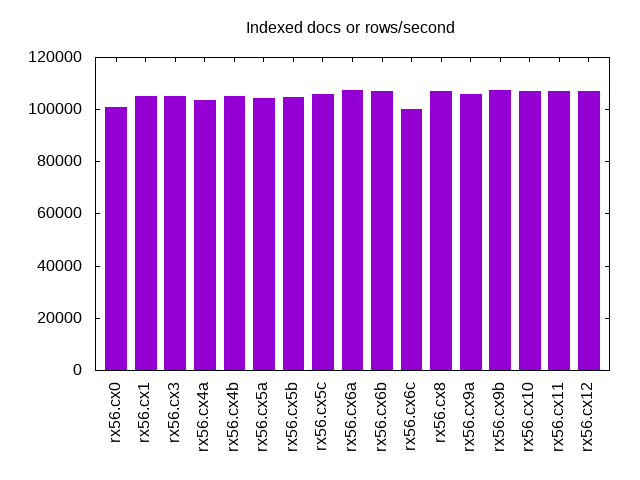
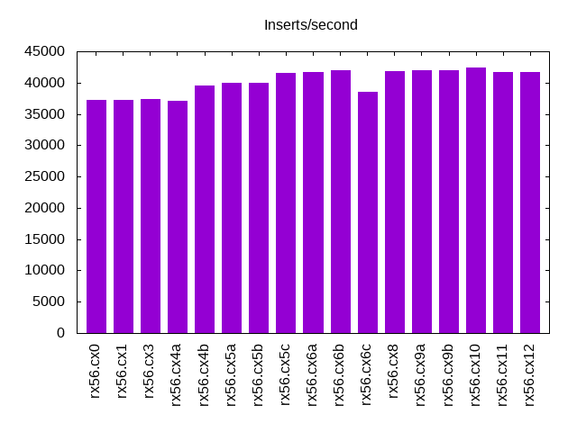

Introduction
This is a report for the insert benchmark with 20M docs and 1 client(s). It is generated by scripts (bash, awk, sed) and Tufte might not be impressed. An overview of the insert benchmark is here and a short update is here. Below, by DBMS, I mean DBMS+version.config. An example is my8020.c10b40 where my means MySQL, 8020 is version 8.0.20 and c10b40 is the name for the configuration file.
The test server is described here. Clients and the DBMS shared the same host running Ubuntu 18.04.5. All tests used MyRocks with MySQL 5.6.35. The configurations for MyRocks are here.
Contents
- Summary
- l.i0: load without secondary indexes
- l.x: create secondary indexes
- l.i1: continue load after secondary indexes created
- q100.2: range queries with 100 insert/s per client, 2nd loop
- q200.2: range queries with 200 insert/s per client, 2nd loop
- q400.2: range queries with 400 insert/s per client, 2nd loop
- q600.2: range queries with 600 insert/s per client, 2nd loop
- q800.2: range queries with 800 insert/s per client, 2nd loop
- q1000.2: range queries with 1000 insert/s per client, 2nd loop
Summary
The numbers are inserts/s for l.i0 and l.i1, indexed docs (or rows) /s for l.x and queries/s for q*.2. The values are the average rate over the entire test for inserts (IPS) and queries (QPS). The range of values for IPS and QPS is split into 3 parts: bottom 25%, middle 50%, top 25%. Values in the bottom 25% have a red background, values in the top 25% have a green background and values in the middle have no color. A gray background is used for values that can be ignored because the DBMS did not sustain the target insert rate. Red backgrounds are not used when the minimum value is within 80% of the max value.
| dbms | l.i0 | l.x | l.i1 | q100.2 | q200.2 | q400.2 | q600.2 | q800.2 | q1000.2 |
|---|---|---|---|---|---|---|---|---|---|
| rx56.cx0 | 106383 | 101005 | 37244 | 4570 | 4829 | 4722 | 4611 | 4670 | 4478 |
| rx56.cx1 | 105263 | 105236 | 37175 | 5069 | 5275 | 5371 | 5149 | 5130 | 5022 |
| rx56.cx3 | 104167 | 105236 | 37383 | 5460 | 5387 | 5337 | 5306 | 5247 | 5290 |
| rx56.cx4a | 104712 | 103608 | 37106 | 5422 | 5428 | 5381 | 5284 | 5273 | 5256 |
| rx56.cx4b | 105263 | 105236 | 39526 | 5386 | 5407 | 5354 | 5306 | 5294 | 5253 |
| rx56.cx5a | 104712 | 104145 | 40000 | 4994 | 5390 | 5353 | 5359 | 5289 | 5276 |
| rx56.cx5b | 103093 | 104688 | 40000 | 5594 | 5564 | 5533 | 5502 | 5450 | 5484 |
| rx56.cx5c | 101010 | 105789 | 41494 | 5198 | 5535 | 5558 | 5489 | 5481 | 5487 |
| rx56.cx6a | 101523 | 107487 | 41754 | 5531 | 5562 | 5485 | 5516 | 5516 | 5452 |
| rx56.cx6b | 101010 | 106915 | 41929 | 5612 | 5597 | 5564 | 5514 | 5529 | 5482 |
| rx56.cx6c | 100502 | 100000 | 38536 | 5521 | 5520 | 5499 | 5488 | 5456 | 5450 |
| rx56.cx8 | 101523 | 106915 | 41841 | 5619 | 5464 | 5597 | 5562 | 5570 | 5507 |
| rx56.cx9a | 101523 | 105789 | 42017 | 5640 | 5633 | 5633 | 5545 | 5530 | 5513 |
| rx56.cx9b | 101010 | 107487 | 41929 | 5561 | 5640 | 5569 | 5594 | 5574 | 5522 |
| rx56.cx10 | 101523 | 106915 | 42373 | 5207 | 5407 | 5549 | 5519 | 5454 | 5456 |
| rx56.cx11 | 100502 | 106915 | 41667 | 5548 | 5542 | 5483 | 5445 | 5440 | 5370 |
| rx56.cx12 | 100000 | 106915 | 41754 | 5554 | 5595 | 5544 | 5513 | 5516 | 5496 |
This lists the average rate of inserts/s for the tests that do inserts concurrent with queries. For such tests the query rate is listed in the table above. The read+write tests are setup so that the insert rate should match the target rate every second. Cells that are not at least 95% of the target have a red background to indicate a failure to satisfy the target.
| dbms | q100.2 | q200.2 | q400.2 | q600.2 | q800.2 | q1000.2 |
|---|---|---|---|---|---|---|
| rx56.cx0 | 100 | 200 | 399 | 599 | 799 | 998 |
| rx56.cx1 | 100 | 200 | 399 | 599 | 799 | 998 |
| rx56.cx3 | 100 | 200 | 399 | 599 | 799 | 998 |
| rx56.cx4a | 100 | 200 | 399 | 599 | 799 | 998 |
| rx56.cx4b | 100 | 200 | 399 | 599 | 799 | 998 |
| rx56.cx5a | 100 | 200 | 399 | 599 | 799 | 998 |
| rx56.cx5b | 100 | 200 | 399 | 599 | 799 | 998 |
| rx56.cx5c | 100 | 200 | 399 | 599 | 799 | 998 |
| rx56.cx6a | 100 | 200 | 399 | 599 | 798 | 998 |
| rx56.cx6b | 100 | 200 | 399 | 599 | 799 | 998 |
| rx56.cx6c | 100 | 200 | 399 | 599 | 799 | 998 |
| rx56.cx8 | 100 | 200 | 399 | 599 | 799 | 998 |
| rx56.cx9a | 100 | 200 | 399 | 599 | 799 | 998 |
| rx56.cx9b | 100 | 200 | 399 | 599 | 799 | 998 |
| rx56.cx10 | 100 | 200 | 399 | 599 | 799 | 998 |
| rx56.cx11 | 100 | 200 | 399 | 599 | 799 | 998 |
| rx56.cx12 | 100 | 200 | 399 | 599 | 799 | 998 |
| target | 100 | 200 | 400 | 600 | 800 | 1000 |
l.i0
l.i0: load without secondary indexes. Graphs for performance per 1-second interval are here.
Average throughput:
Insert response time histogram: each cell has the percentage of responses that take <= the time in the header and max is the max response time in seconds. For the max column values in the top 25% of the range have a red background and in the bottom 25% of the range have a green background. The red background is not used when the min value is within 80% of the max value.
| dbms | 256us | 1ms | 4ms | 16ms | 64ms | 256ms | 1s | 4s | 16s | gt | max |
|---|---|---|---|---|---|---|---|---|---|---|---|
| rx56.cx0 | 93.389 | 6.568 | 0.038 | 0.001 | 0.003 | 0.106 | |||||
| rx56.cx1 | 92.239 | 7.713 | 0.043 | 0.001 | 0.003 | 0.125 | |||||
| rx56.cx3 | 92.007 | 7.942 | 0.047 | 0.001 | 0.003 | 0.137 | |||||
| rx56.cx4a | 92.294 | 7.656 | 0.045 | 0.001 | 0.003 | 0.144 | |||||
| rx56.cx4b | 96.234 | 3.720 | 0.042 | 0.001 | 0.003 | 0.139 | |||||
| rx56.cx5a | 93.188 | 6.763 | 0.046 | 0.001 | 0.003 | 0.127 | |||||
| rx56.cx5b | 87.947 | 11.999 | 0.051 | 0.003 | 0.131 | ||||||
| rx56.cx5c | 82.378 | 17.578 | 0.039 | 0.001 | 0.003 | 0.128 | |||||
| rx56.cx6a | 81.786 | 18.166 | 0.043 | 0.001 | 0.004 | 0.129 | |||||
| rx56.cx6b | 79.055 | 20.898 | 0.044 | 0.003 | 0.129 | ||||||
| rx56.cx6c | 73.907 | 26.041 | 0.048 | 0.001 | 0.003 | 0.131 | |||||
| rx56.cx8 | 83.276 | 16.681 | 0.040 | 0.003 | 0.131 | ||||||
| rx56.cx9a | 76.574 | 23.372 | 0.051 | 0.001 | 0.003 | 0.122 | |||||
| rx56.cx9b | 80.156 | 19.792 | 0.048 | 0.003 | 0.122 | ||||||
| rx56.cx10 | 80.393 | 19.574 | 0.029 | 0.003 | 0.118 | ||||||
| rx56.cx11 | 76.632 | 23.318 | 0.046 | 0.001 | 0.003 | 0.132 | |||||
| rx56.cx12 | 73.549 | 26.404 | 0.043 | 0.003 | 0.127 |
Performance metrics for the DBMS listed above. Some are normalized by throughput, others are not. Legend for results is here.
ips qps rps rkbps wkbps rpq rkbpq wkbpi csps cpups cspq cpupq dbgb1 dbgb2 rss maxop p50 p99 tag 106383 0 0 0 24111 0.000 0.000 0.227 10948 46.4 0.103 17 0.6 1.7 0.2 0.106 109483 81310 rx56.cx0 105263 0 0 0 23561 0.000 0.000 0.224 10899 46.3 0.104 18 0.6 1.7 0.2 0.125 108360 79815 rx56.cx1 104167 0 0 0 23498 0.000 0.000 0.226 10765 46.2 0.103 18 0.6 1.7 0.2 0.137 106714 87303 rx56.cx3 104712 0 0 0 23540 0.000 0.000 0.225 10864 46.0 0.104 18 0.6 1.7 0.2 0.144 107981 83408 rx56.cx4a 105263 0 0 0 23558 0.000 0.000 0.224 10944 46.2 0.104 18 0.7 1.7 0.2 0.139 107884 81710 rx56.cx4b 104712 0 0 0 23527 0.000 0.000 0.225 10919 46.3 0.104 18 0.7 1.7 0.4 0.127 107681 83608 rx56.cx5a 103093 0 0 0 23430 0.000 0.000 0.227 10705 45.8 0.104 18 0.7 1.7 0.6 0.131 106286 78414 rx56.cx5b 101010 0 0 0 22911 0.000 0.000 0.227 10515 45.7 0.104 18 0.7 1.7 1.1 0.128 101389 76215 rx56.cx5c 101523 0 0 0 27083 0.000 0.000 0.267 10642 45.7 0.105 18 1.0 2.0 1.1 0.129 101189 81011 rx56.cx6a 101010 0 0 0 30292 0.000 0.000 0.300 10455 45.4 0.103 18 0.8 1.9 1.1 0.129 100392 75517 rx56.cx6b 100502 0 0 0 28622 0.000 0.000 0.285 10497 45.9 0.104 18 0.8 1.8 1.1 0.131 100793 78215 rx56.cx6c 101523 0 0 0 30314 0.000 0.000 0.299 10536 45.9 0.104 18 0.8 1.9 1.1 0.131 100491 73618 rx56.cx8 101523 0 0 0 31374 0.000 0.000 0.309 10631 45.7 0.105 18 0.8 1.9 1.1 0.122 101987 78416 rx56.cx9a 101010 0 0 0 28234 0.000 0.000 0.280 10518 45.7 0.104 18 0.8 1.9 1.1 0.122 100290 77246 rx56.cx9b 101523 0 0 0 30308 0.000 0.000 0.299 10123 45.7 0.100 18 0.8 1.9 1.1 0.118 100489 79813 rx56.cx10 100502 0 0 0 30272 0.000 0.000 0.301 10432 45.5 0.104 18 0.8 1.9 1.1 0.132 100990 78716 rx56.cx11 100000 0 0 0 29609 0.000 0.000 0.296 10321 45.6 0.103 18 0.8 1.9 1.1 0.127 99089 76518 rx56.cx12
l.x
l.x: create secondary indexes.
Average throughput:
Performance metrics for the DBMS listed above. Some are normalized by throughput, others are not. Legend for results is here.
ips qps rps rkbps wkbps rpq rkbpq wkbpi csps cpups cspq cpupq dbgb1 dbgb2 rss maxop p50 p99 tag 101005 0 0 22 27264 0.000 0.000 0.270 902 25.1 0.009 10 1.4 2.4 0.8 0.004 NA NA rx56.cx0 105236 0 0 23 28760 0.000 0.000 0.273 947 25.0 0.009 10 1.4 2.4 1.3 0.004 NA NA rx56.cx1 105236 0 0 23 28816 0.000 0.000 0.274 953 25.0 0.009 10 1.4 2.4 1.3 0.004 NA NA rx56.cx3 103608 0 0 23 27978 0.000 0.000 0.270 959 24.9 0.009 10 1.4 2.4 1.3 0.004 NA NA rx56.cx4a 105236 0 0 23 28655 0.000 0.000 0.272 952 24.9 0.009 9 1.4 2.5 1.3 0.004 NA NA rx56.cx4b 104145 0 0 23 28632 0.000 0.000 0.275 946 24.9 0.009 10 1.4 2.5 1.5 0.003 NA NA rx56.cx5a 104688 0 0 23 28389 0.000 0.000 0.271 916 25.0 0.009 10 1.4 2.5 1.7 0.004 NA NA rx56.cx5b 105789 0 0 23 34622 0.000 0.000 0.327 928 24.9 0.009 9 1.4 2.5 2.2 0.003 NA NA rx56.cx5c 107487 0 0 42 33481 0.000 0.000 0.311 968 25.0 0.009 9 2.3 3.3 2.2 0.008 NA NA rx56.cx6a 106915 0 0 23 34848 0.000 0.000 0.326 964 25.0 0.009 9 1.6 2.6 2.2 0.004 NA NA rx56.cx6b 100000 0 0 16 26976 0.000 0.000 0.270 880 25.0 0.009 10 1.3 2.4 2.2 0.004 NA NA rx56.cx6c 106915 0 0 21 29312 0.000 0.000 0.274 959 24.9 0.009 9 1.6 2.6 2.2 0.004 NA NA rx56.cx8 105789 0 0 18 34610 0.000 0.000 0.327 939 24.8 0.009 9 1.6 2.6 2.1 0.009 NA NA rx56.cx9a 107487 0 0 7 34735 0.000 0.000 0.323 965 24.8 0.009 9 1.5 2.6 2.1 0.003 NA NA rx56.cx9b 106915 0 0 23 28930 0.000 0.000 0.271 951 25.0 0.009 9 1.6 2.6 2.2 0.004 NA NA rx56.cx10 106915 0 0 23 29284 0.000 0.000 0.274 959 25.1 0.009 9 1.6 2.6 2.2 0.009 NA NA rx56.cx11 106915 0 0 23 28998 0.000 0.000 0.271 978 25.0 0.009 9 1.6 2.6 2.2 0.009 NA NA rx56.cx12
l.i1
l.i1: continue load after secondary indexes created. Graphs for performance per 1-second interval are here.
Average throughput:
Insert response time histogram: each cell has the percentage of responses that take <= the time in the header and max is the max response time in seconds. For the max column values in the top 25% of the range have a red background and in the bottom 25% of the range have a green background. The red background is not used when the min value is within 80% of the max value.
| dbms | 256us | 1ms | 4ms | 16ms | 64ms | 256ms | 1s | 4s | 16s | gt | max |
|---|---|---|---|---|---|---|---|---|---|---|---|
| rx56.cx0 | 0.647 | 99.261 | 0.089 | 0.003 | 0.046 | ||||||
| rx56.cx1 | 0.644 | 99.265 | 0.089 | 0.002 | nonzero | 0.067 | |||||
| rx56.cx3 | 1.129 | 98.759 | 0.109 | 0.003 | nonzero | 0.077 | |||||
| rx56.cx4a | 1.265 | 98.619 | 0.112 | 0.004 | 0.057 | ||||||
| rx56.cx4b | 4.597 | 95.286 | 0.113 | 0.003 | nonzero | 0.068 | |||||
| rx56.cx5a | 5.613 | 94.276 | 0.108 | 0.002 | nonzero | 0.068 | |||||
| rx56.cx5b | 4.659 | 95.226 | 0.113 | 0.002 | 0.061 | ||||||
| rx56.cx5c | 3.967 | 95.945 | 0.085 | 0.002 | 0.001 | 0.080 | |||||
| rx56.cx6a | 5.114 | 94.787 | 0.096 | 0.003 | 0.001 | 0.070 | |||||
| rx56.cx6b | 5.162 | 94.742 | 0.092 | 0.004 | nonzero | 0.067 | |||||
| rx56.cx6c | 2.210 | 97.693 | 0.093 | 0.004 | nonzero | 0.067 | |||||
| rx56.cx8 | 4.674 | 95.227 | 0.096 | 0.003 | 0.001 | 0.071 | |||||
| rx56.cx9a | 5.527 | 94.378 | 0.091 | 0.003 | nonzero | 0.070 | |||||
| rx56.cx9b | 4.793 | 95.115 | 0.089 | 0.003 | 0.001 | 0.092 | |||||
| rx56.cx10 | 5.125 | 94.813 | 0.060 | 0.002 | 0.064 | ||||||
| rx56.cx11 | 4.853 | 95.052 | 0.092 | 0.003 | 0.001 | 0.076 | |||||
| rx56.cx12 | 4.391 | 95.506 | 0.101 | 0.002 | 0.001 | 0.069 |
Performance metrics for the DBMS listed above. Some are normalized by throughput, others are not. Legend for results is here.
ips qps rps rkbps wkbps rpq rkbpq wkbpi csps cpups cspq cpupq dbgb1 dbgb2 rss maxop p50 p99 tag 37244 0 0 0 51784 0.000 0.000 1.390 8071 41.9 0.217 45 3.2 4.8 0.8 0.046 37110 30168 rx56.cx0 37175 0 0 0 51645 0.000 0.000 1.389 8019 42.0 0.216 45 3.2 4.8 1.5 0.067 37059 30687 rx56.cx1 37383 0 12 1493 96948 0.000 0.040 2.593 8954 54.5 0.240 58 2.9 4.5 1.6 0.077 37009 29568 rx56.cx3 37106 0 12 1493 97514 0.000 0.040 2.628 8828 54.5 0.238 59 2.9 4.4 1.6 0.057 36661 30218 rx56.cx4a 39526 0 12 1583 96168 0.000 0.040 2.433 9221 55.0 0.233 56 2.9 4.5 2.4 0.068 39357 31915 rx56.cx4b 40000 0 13 1615 91609 0.000 0.040 2.290 9353 55.2 0.234 55 2.9 6.5 2.5 0.068 40156 31116 rx56.cx5a 40000 0 13 1599 83331 0.000 0.040 2.083 9057 53.4 0.226 53 3.5 7.1 2.8 0.061 40056 31515 rx56.cx5b 41494 0 0 0 65723 0.000 0.000 1.584 9007 48.5 0.217 47 3.3 6.8 3.1 0.080 41654 32115 rx56.cx5c 41754 0 9 1177 86630 0.000 0.028 2.075 9403 45.2 0.225 43 4.9 8.5 3.0 0.070 41904 32864 rx56.cx6a 41929 0 7 903 90611 0.000 0.022 2.161 9546 46.0 0.228 44 3.8 7.3 3.1 0.067 41805 33614 rx56.cx6b 38536 0 8 1038 70689 0.000 0.027 1.834 8543 48.3 0.222 50 3.3 6.9 2.8 0.067 38158 31066 rx56.cx6c 41841 0 7 904 90388 0.000 0.022 2.160 9548 45.8 0.228 44 3.8 7.3 3.0 0.071 42053 32664 rx56.cx8 42017 0 7 860 92650 0.000 0.020 2.205 9538 45.9 0.227 44 3.7 7.3 2.9 0.070 42004 34225 rx56.cx9a 41929 0 7 834 88051 0.000 0.020 2.100 9413 45.5 0.224 43 3.7 7.3 2.9 0.092 42003 32515 rx56.cx9b 42373 0 7 914 91780 0.000 0.022 2.166 8327 46.4 0.197 44 3.8 7.4 3.1 0.064 42504 33414 rx56.cx10 41667 0 7 904 89568 0.000 0.022 2.150 9371 45.9 0.225 44 3.8 7.3 3.1 0.076 41804 32665 rx56.cx11 41754 0 7 904 90435 0.000 0.022 2.166 9397 46.2 0.225 44 3.7 7.3 3.1 0.069 41654 34585 rx56.cx12
q100.2
q100.2: range queries with 100 insert/s per client, 2nd loop. Graphs for performance per 1-second interval are here.
Average throughput:
Query response time histogram: each cell has the percentage of responses that take <= the time in the header and max is the max response time in seconds. For max values in the top 25% of the range have a red background and in the bottom 25% of the range have a green background. The red background is not used when the min value is within 80% of the max value.
| dbms | 256us | 1ms | 4ms | 16ms | 64ms | 256ms | 1s | 4s | 16s | gt | max |
|---|---|---|---|---|---|---|---|---|---|---|---|
| rx56.cx0 | 98.252 | 1.748 | nonzero | 0.002 | |||||||
| rx56.cx1 | 99.648 | 0.352 | nonzero | nonzero | 0.008 | ||||||
| rx56.cx3 | 99.781 | 0.219 | nonzero | 0.003 | |||||||
| rx56.cx4a | 99.757 | 0.243 | nonzero | 0.003 | |||||||
| rx56.cx4b | 99.738 | 0.262 | nonzero | 0.002 | |||||||
| rx56.cx5a | 99.643 | 0.357 | nonzero | 0.002 | |||||||
| rx56.cx5b | 99.807 | 0.193 | nonzero | nonzero | 0.008 | ||||||
| rx56.cx5c | 99.674 | 0.326 | nonzero | 0.002 | |||||||
| rx56.cx6a | 99.785 | 0.215 | nonzero | 0.002 | |||||||
| rx56.cx6b | 99.846 | 0.154 | nonzero | 0.002 | |||||||
| rx56.cx6c | 99.797 | 0.203 | nonzero | 0.002 | |||||||
| rx56.cx8 | 99.864 | 0.136 | nonzero | 0.002 | |||||||
| rx56.cx9a | 99.857 | 0.143 | nonzero | 0.002 | |||||||
| rx56.cx9b | 99.800 | 0.200 | nonzero | 0.003 | |||||||
| rx56.cx10 | 99.706 | 0.294 | nonzero | nonzero | 0.006 | ||||||
| rx56.cx11 | 99.806 | 0.194 | nonzero | 0.002 | |||||||
| rx56.cx12 | 99.817 | 0.183 | nonzero | 0.002 |
Insert response time histogram: each cell has the percentage of responses that take <= the time in the header and max is the max response time in seconds. For max values in the top 25% of the range have a red background and in the bottom 25% of the range have a green background. The red background is not used when the min value is within 80% of the max value.
| dbms | 256us | 1ms | 4ms | 16ms | 64ms | 256ms | 1s | 4s | 16s | gt | max |
|---|---|---|---|---|---|---|---|---|---|---|---|
| rx56.cx0 | 99.917 | 0.083 | 0.004 | ||||||||
| rx56.cx1 | 99.944 | 0.056 | 0.004 | ||||||||
| rx56.cx3 | 99.972 | 0.028 | 0.004 | ||||||||
| rx56.cx4a | 0.056 | 99.944 | 0.004 | ||||||||
| rx56.cx4b | 100.000 | 0.004 | |||||||||
| rx56.cx5a | 0.056 | 99.889 | 0.056 | 0.004 | |||||||
| rx56.cx5b | 0.306 | 99.667 | 0.028 | 0.006 | |||||||
| rx56.cx5c | 99.917 | 0.083 | 0.008 | ||||||||
| rx56.cx6a | 99.972 | 0.028 | 0.004 | ||||||||
| rx56.cx6b | 99.972 | 0.028 | 0.004 | ||||||||
| rx56.cx6c | 99.972 | 0.028 | 0.004 | ||||||||
| rx56.cx8 | 99.944 | 0.056 | 0.004 | ||||||||
| rx56.cx9a | 100.000 | 0.004 | |||||||||
| rx56.cx9b | 99.944 | 0.056 | 0.004 | ||||||||
| rx56.cx10 | 99.972 | 0.028 | 0.004 | ||||||||
| rx56.cx11 | 100.000 | 0.004 | |||||||||
| rx56.cx12 | 99.972 | 0.028 | 0.004 |
Performance metrics for the DBMS listed above. Some are normalized by throughput, others are not. Legend for results is here.
ips qps rps rkbps wkbps rpq rkbpq wkbpi csps cpups cspq cpupq dbgb1 dbgb2 rss maxop p50 p99 tag 100 4570 0 0 63 0.000 0.000 0.626 17539 24.3 3.838 213 3.1 4.7 0.7 0.002 4587 4427 rx56.cx0 100 5069 0 0 63 0.000 0.000 0.626 19442 24.7 3.836 195 3.1 4.7 2.7 0.008 5067 4795 rx56.cx1 100 5460 0 0 197 0.000 0.000 1.976 20937 25.7 3.835 188 2.9 4.5 2.5 0.003 5466 5322 rx56.cx3 100 5422 0 0 197 0.000 0.000 1.977 20792 25.8 3.834 190 2.9 4.5 2.4 0.003 5434 5274 rx56.cx4a 100 5386 0 0 282 0.000 0.000 2.831 20658 25.8 3.835 192 3.0 4.6 3.4 0.002 5402 5226 rx56.cx4b 100 4994 0 0 282 0.000 0.000 2.830 19165 24.6 3.838 197 3.0 6.6 3.4 0.002 4859 4731 rx56.cx5a 100 5594 0 0 707 0.000 0.000 7.088 21462 26.0 3.837 186 3.0 6.6 4.4 0.008 5599 5402 rx56.cx5b 100 5198 0 0 25 0.000 0.000 0.247 19961 25.3 3.840 195 3.1 6.8 4.6 0.002 5210 5066 rx56.cx5c 100 5531 0 0 25 0.000 0.000 0.247 21204 25.8 3.834 187 4.6 8.3 4.3 0.002 5530 5434 rx56.cx6a 100 5612 0 0 25 0.000 0.000 0.248 21509 25.8 3.833 184 3.4 7.1 4.3 0.002 5610 5530 rx56.cx6b 100 5521 0 0 25 0.000 0.000 0.247 21164 25.7 3.834 186 2.9 6.5 4.3 0.002 5530 5434 rx56.cx6c 100 5619 0 0 25 0.000 0.000 0.247 21540 25.8 3.833 184 3.4 7.1 4.2 0.002 5626 5530 rx56.cx8 100 5640 0 0 25 0.000 0.000 0.247 21627 25.8 3.835 183 3.4 7.0 4.8 0.002 5642 5546 rx56.cx9a 100 5561 0 0 25 0.000 0.000 0.248 21330 25.8 3.836 186 3.3 6.9 5.1 0.003 5566 5450 rx56.cx9b 100 5207 0 0 25 0.000 0.000 0.247 19966 25.2 3.835 194 3.4 7.1 4.3 0.006 5210 5082 rx56.cx10 100 5548 0 0 26 0.000 0.000 0.259 21268 25.8 3.834 186 3.4 7.1 4.3 0.002 5546 5450 rx56.cx11 100 5554 0 0 25 0.000 0.000 0.247 21296 25.8 3.834 186 3.4 7.1 4.3 0.002 5562 5450 rx56.cx12
q200.2
q200.2: range queries with 200 insert/s per client, 2nd loop. Graphs for performance per 1-second interval are here.
Average throughput:

Query response time histogram: each cell has the percentage of responses that take <= the time in the header and max is the max response time in seconds. For max values in the top 25% of the range have a red background and in the bottom 25% of the range have a green background. The red background is not used when the min value is within 80% of the max value.
| dbms | 256us | 1ms | 4ms | 16ms | 64ms | 256ms | 1s | 4s | 16s | gt | max |
|---|---|---|---|---|---|---|---|---|---|---|---|
| rx56.cx0 | 99.342 | 0.658 | nonzero | 0.003 | |||||||
| rx56.cx1 | 99.697 | 0.303 | nonzero | 0.003 | |||||||
| rx56.cx3 | 99.744 | 0.255 | 0.001 | 0.002 | |||||||
| rx56.cx4a | 99.754 | 0.245 | 0.001 | 0.002 | |||||||
| rx56.cx4b | 99.760 | 0.240 | nonzero | 0.002 | |||||||
| rx56.cx5a | 99.742 | 0.258 | nonzero | nonzero | 0.009 | ||||||
| rx56.cx5b | 99.824 | 0.176 | nonzero | nonzero | 0.008 | ||||||
| rx56.cx5c | 99.797 | 0.203 | nonzero | 0.002 | |||||||
| rx56.cx6a | 99.792 | 0.208 | nonzero | nonzero | 0.008 | ||||||
| rx56.cx6b | 99.822 | 0.178 | nonzero | nonzero | 0.010 | ||||||
| rx56.cx6c | 99.804 | 0.196 | nonzero | nonzero | 0.011 | ||||||
| rx56.cx8 | 99.797 | 0.203 | nonzero | nonzero | 0.008 | ||||||
| rx56.cx9a | 99.847 | 0.153 | nonzero | nonzero | 0.007 | ||||||
| rx56.cx9b | 99.822 | 0.178 | nonzero | nonzero | 0.008 | ||||||
| rx56.cx10 | 99.779 | 0.221 | nonzero | nonzero | 0.010 | ||||||
| rx56.cx11 | 99.785 | 0.215 | nonzero | nonzero | 0.010 | ||||||
| rx56.cx12 | 99.831 | 0.169 | nonzero | nonzero | 0.007 |
Insert response time histogram: each cell has the percentage of responses that take <= the time in the header and max is the max response time in seconds. For max values in the top 25% of the range have a red background and in the bottom 25% of the range have a green background. The red background is not used when the min value is within 80% of the max value.
| dbms | 256us | 1ms | 4ms | 16ms | 64ms | 256ms | 1s | 4s | 16s | gt | max |
|---|---|---|---|---|---|---|---|---|---|---|---|
| rx56.cx0 | 99.944 | 0.056 | 0.008 | ||||||||
| rx56.cx1 | 99.944 | 0.056 | 0.007 | ||||||||
| rx56.cx3 | 99.944 | 0.056 | 0.007 | ||||||||
| rx56.cx4a | 99.944 | 0.056 | 0.004 | ||||||||
| rx56.cx4b | 0.111 | 99.833 | 0.056 | 0.005 | |||||||
| rx56.cx5a | 0.181 | 99.806 | 0.014 | 0.004 | |||||||
| rx56.cx5b | 0.264 | 99.694 | 0.042 | 0.006 | |||||||
| rx56.cx5c | 2.861 | 97.111 | 0.028 | 0.010 | |||||||
| rx56.cx6a | 2.889 | 97.097 | 0.014 | 0.011 | |||||||
| rx56.cx6b | 1.417 | 98.556 | 0.028 | 0.004 | |||||||
| rx56.cx6c | 0.542 | 99.375 | 0.083 | 0.005 | |||||||
| rx56.cx8 | 1.278 | 98.681 | 0.042 | 0.011 | |||||||
| rx56.cx9a | 1.500 | 98.444 | 0.056 | 0.011 | |||||||
| rx56.cx9b | 0.722 | 99.236 | 0.042 | 0.011 | |||||||
| rx56.cx10 | 1.194 | 98.778 | 0.028 | 0.004 | |||||||
| rx56.cx11 | 1.514 | 98.431 | 0.056 | 0.011 | |||||||
| rx56.cx12 | 1.486 | 98.472 | 0.042 | 0.011 |
Performance metrics for the DBMS listed above. Some are normalized by throughput, others are not. Legend for results is here.
ips qps rps rkbps wkbps rpq rkbpq wkbpi csps cpups cspq cpupq dbgb1 dbgb2 rss maxop p50 p99 tag 200 4829 0 0 81 0.000 0.000 0.405 18538 24.7 3.839 205 3.1 4.9 0.8 0.003 4811 4683 rx56.cx0 200 5275 0 0 81 0.000 0.000 0.405 20239 25.4 3.837 193 3.1 4.9 3.0 0.003 5322 4955 rx56.cx1 200 5387 0 0 283 0.000 0.000 1.417 20673 25.9 3.838 192 2.9 4.7 2.7 0.002 5402 5242 rx56.cx3 200 5428 0 0 283 0.000 0.000 1.417 20841 25.8 3.840 190 2.9 4.7 2.7 0.002 5434 5258 rx56.cx4a 200 5407 0 0 291 0.000 0.000 1.458 20751 25.9 3.838 192 3.0 4.7 3.7 0.002 5418 5242 rx56.cx4b 200 5390 0 0 291 0.000 0.000 1.460 20698 25.8 3.840 191 3.0 6.7 3.8 0.009 5402 5226 rx56.cx5a 200 5564 0 0 869 0.000 0.000 4.355 21367 26.1 3.840 188 3.0 6.8 4.8 0.008 5578 5354 rx56.cx5b 200 5535 0 0 1493 0.000 0.000 7.478 21266 26.2 3.842 189 3.2 6.9 5.2 0.002 5546 5258 rx56.cx5c 200 5562 0 0 1572 0.000 0.000 7.878 21377 26.1 3.843 188 4.8 8.5 4.7 0.008 5563 5404 rx56.cx6a 200 5597 0 0 1884 0.000 0.000 9.438 21516 26.1 3.844 187 3.5 7.2 4.8 0.010 5610 5434 rx56.cx6b 200 5520 0 0 1894 0.000 0.000 9.487 21216 26.2 3.844 190 3.0 6.7 4.9 0.011 5530 5322 rx56.cx6c 200 5464 0 0 1883 0.000 0.000 9.436 21009 26.0 3.845 190 3.5 7.2 4.7 0.008 5566 5146 rx56.cx8 200 5633 0 0 1954 0.000 0.000 9.792 21650 26.2 3.843 186 3.4 7.2 5.4 0.007 5642 5466 rx56.cx9a 200 5640 0 0 2019 0.000 0.000 10.113 21685 26.2 3.844 186 3.4 7.1 6.0 0.008 5658 5418 rx56.cx9b 200 5407 0 0 1884 0.000 0.000 9.438 20745 25.8 3.837 191 3.5 7.2 4.7 0.010 5530 5034 rx56.cx10 200 5542 0 0 1884 0.000 0.000 9.439 21304 26.1 3.844 188 3.5 7.2 4.7 0.010 5548 5354 rx56.cx11 200 5595 0 0 1884 0.000 0.000 9.439 21508 26.1 3.844 187 3.5 7.2 4.8 0.007 5610 5402 rx56.cx12
q400.2
q400.2: range queries with 400 insert/s per client, 2nd loop. Graphs for performance per 1-second interval are here.
Average throughput:
Query response time histogram: each cell has the percentage of responses that take <= the time in the header and max is the max response time in seconds. For max values in the top 25% of the range have a red background and in the bottom 25% of the range have a green background. The red background is not used when the min value is within 80% of the max value.
| dbms | 256us | 1ms | 4ms | 16ms | 64ms | 256ms | 1s | 4s | 16s | gt | max |
|---|---|---|---|---|---|---|---|---|---|---|---|
| rx56.cx0 | 98.550 | 1.449 | nonzero | 0.003 | |||||||
| rx56.cx1 | 99.539 | 0.460 | nonzero | 0.002 | |||||||
| rx56.cx3 | 99.524 | 0.476 | nonzero | 0.004 | |||||||
| rx56.cx4a | 99.535 | 0.464 | nonzero | nonzero | 0.010 | ||||||
| rx56.cx4b | 99.523 | 0.476 | nonzero | nonzero | 0.010 | ||||||
| rx56.cx5a | 99.531 | 0.468 | 0.001 | 0.002 | |||||||
| rx56.cx5b | 99.644 | 0.356 | nonzero | nonzero | 0.005 | ||||||
| rx56.cx5c | 99.623 | 0.377 | nonzero | nonzero | 0.008 | ||||||
| rx56.cx6a | 99.601 | 0.399 | nonzero | nonzero | 0.006 | ||||||
| rx56.cx6b | 99.608 | 0.391 | nonzero | 0.002 | |||||||
| rx56.cx6c | 99.600 | 0.400 | 0.001 | nonzero | 0.007 | ||||||
| rx56.cx8 | 99.633 | 0.366 | nonzero | nonzero | 0.009 | ||||||
| rx56.cx9a | 99.683 | 0.316 | nonzero | 0.002 | |||||||
| rx56.cx9b | 99.622 | 0.377 | nonzero | 0.003 | |||||||
| rx56.cx10 | 99.653 | 0.347 | 0.001 | 0.003 | |||||||
| rx56.cx11 | 99.590 | 0.409 | nonzero | 0.002 | |||||||
| rx56.cx12 | 99.645 | 0.354 | nonzero | 0.003 |
Insert response time histogram: each cell has the percentage of responses that take <= the time in the header and max is the max response time in seconds. For max values in the top 25% of the range have a red background and in the bottom 25% of the range have a green background. The red background is not used when the min value is within 80% of the max value.
| dbms | 256us | 1ms | 4ms | 16ms | 64ms | 256ms | 1s | 4s | 16s | gt | max |
|---|---|---|---|---|---|---|---|---|---|---|---|
| rx56.cx0 | 0.062 | 99.917 | 0.021 | 0.004 | |||||||
| rx56.cx1 | 0.118 | 99.854 | 0.028 | 0.004 | |||||||
| rx56.cx3 | 0.014 | 99.965 | 0.021 | 0.005 | |||||||
| rx56.cx4a | 0.021 | 99.965 | 0.014 | 0.004 | |||||||
| rx56.cx4b | 0.076 | 99.903 | 0.021 | 0.004 | |||||||
| rx56.cx5a | 0.569 | 99.417 | 0.014 | 0.004 | |||||||
| rx56.cx5b | 0.347 | 99.653 | 0.004 | ||||||||
| rx56.cx5c | 3.021 | 96.931 | 0.049 | 0.010 | |||||||
| rx56.cx6a | 3.542 | 96.444 | 0.014 | 0.010 | |||||||
| rx56.cx6b | 0.931 | 99.021 | 0.049 | 0.011 | |||||||
| rx56.cx6c | 0.438 | 99.500 | 0.062 | 0.011 | |||||||
| rx56.cx8 | 0.479 | 99.500 | 0.021 | 0.004 | |||||||
| rx56.cx9a | 0.625 | 99.347 | 0.028 | 0.011 | |||||||
| rx56.cx9b | 0.646 | 99.299 | 0.056 | 0.011 | |||||||
| rx56.cx10 | 0.653 | 99.312 | 0.035 | 0.010 | |||||||
| rx56.cx11 | 0.903 | 99.076 | 0.021 | 0.011 | |||||||
| rx56.cx12 | 0.847 | 99.125 | 0.028 | 0.011 |
Performance metrics for the DBMS listed above. Some are normalized by throughput, others are not. Legend for results is here.
ips qps rps rkbps wkbps rpq rkbpq wkbpi csps cpups cspq cpupq dbgb1 dbgb2 rss maxop p50 p99 tag 399 4722 0 0 155 0.000 0.000 0.388 18168 24.6 3.847 208 3.3 5.2 0.8 0.003 4731 4491 rx56.cx0 399 5371 0 0 155 0.000 0.000 0.388 20643 25.7 3.844 191 3.3 5.2 3.3 0.002 5386 5018 rx56.cx1 399 5337 0 0 802 0.000 0.000 2.008 20533 26.1 3.847 196 3.1 5.0 3.4 0.004 5354 5018 rx56.cx3 399 5381 0 0 802 0.000 0.000 2.008 20696 26.0 3.846 193 3.1 5.0 3.4 0.010 5386 5082 rx56.cx4a 399 5354 0 0 668 0.000 0.000 1.672 20592 26.0 3.846 194 3.1 5.0 4.7 0.010 5370 5082 rx56.cx4b 399 5353 0 0 3026 0.000 0.000 7.577 20590 26.1 3.846 195 3.1 3.2 4.7 0.002 5370 5051 rx56.cx5a 399 5533 0 0 999 0.000 0.000 2.501 21285 26.3 3.847 190 3.1 7.0 5.8 0.005 5546 5290 rx56.cx5b 399 5558 0 0 2020 0.000 0.000 5.060 21419 26.5 3.854 191 3.3 7.2 5.9 0.008 5578 5242 rx56.cx5c 399 5485 0 0 1996 0.000 0.000 4.999 21133 26.3 3.853 192 4.9 8.8 5.3 0.006 5498 5290 rx56.cx6a 399 5564 0 0 2004 0.000 0.000 5.018 21431 26.3 3.852 189 3.6 7.5 5.5 0.002 5578 5338 rx56.cx6b 399 5499 0 0 1873 0.000 0.000 4.690 21177 26.3 3.851 191 3.0 6.9 5.5 0.007 5514 5290 rx56.cx6c 399 5597 0 0 2002 0.000 0.000 5.014 21571 26.5 3.854 189 3.6 7.5 5.4 0.009 5610 5338 rx56.cx8 399 5633 0 0 2069 0.000 0.000 5.182 21691 26.3 3.851 187 3.5 7.4 6.2 0.002 5642 5466 rx56.cx9a 399 5569 0 0 1711 0.000 0.000 4.286 21447 26.3 3.851 189 3.5 7.4 6.8 0.003 5578 5388 rx56.cx9b 399 5549 0 0 2004 0.000 0.000 5.019 21321 26.3 3.842 190 3.6 7.5 5.4 0.003 5562 5370 rx56.cx10 399 5483 0 0 2004 0.000 0.000 5.019 21115 26.3 3.851 192 3.6 7.5 5.4 0.002 5498 5258 rx56.cx11 399 5544 0 0 2004 0.000 0.000 5.018 21357 26.3 3.852 190 3.6 7.5 5.5 0.003 5562 5322 rx56.cx12
q600.2
q600.2: range queries with 600 insert/s per client, 2nd loop. Graphs for performance per 1-second interval are here.
Average throughput:
Query response time histogram: each cell has the percentage of responses that take <= the time in the header and max is the max response time in seconds. For max values in the top 25% of the range have a red background and in the bottom 25% of the range have a green background. The red background is not used when the min value is within 80% of the max value.
| dbms | 256us | 1ms | 4ms | 16ms | 64ms | 256ms | 1s | 4s | 16s | gt | max |
|---|---|---|---|---|---|---|---|---|---|---|---|
| rx56.cx0 | 97.300 | 2.698 | 0.002 | nonzero | 0.013 | ||||||
| rx56.cx1 | 99.272 | 0.727 | 0.001 | 0.002 | |||||||
| rx56.cx3 | 99.354 | 0.645 | 0.002 | nonzero | 0.011 | ||||||
| rx56.cx4a | 99.340 | 0.658 | 0.002 | 0.003 | |||||||
| rx56.cx4b | 99.351 | 0.648 | 0.001 | 0.003 | |||||||
| rx56.cx5a | 99.358 | 0.640 | 0.002 | 0.003 | |||||||
| rx56.cx5b | 99.470 | 0.529 | 0.001 | nonzero | 0.008 | ||||||
| rx56.cx5c | 99.439 | 0.559 | 0.002 | nonzero | 0.010 | ||||||
| rx56.cx6a | 99.480 | 0.519 | 0.001 | nonzero | 0.010 | ||||||
| rx56.cx6b | 99.458 | 0.541 | 0.001 | nonzero | 0.008 | ||||||
| rx56.cx6c | 99.472 | 0.527 | 0.002 | nonzero | 0.010 | ||||||
| rx56.cx8 | 99.503 | 0.496 | 0.001 | 0.003 | |||||||
| rx56.cx9a | 99.480 | 0.519 | 0.001 | nonzero | 0.015 | ||||||
| rx56.cx9b | 99.520 | 0.479 | 0.001 | nonzero | 0.008 | ||||||
| rx56.cx10 | 99.463 | 0.536 | 0.001 | nonzero | 0.008 | ||||||
| rx56.cx11 | 99.414 | 0.585 | 0.001 | 0.002 | |||||||
| rx56.cx12 | 99.474 | 0.525 | 0.001 | 0.002 |
Insert response time histogram: each cell has the percentage of responses that take <= the time in the header and max is the max response time in seconds. For max values in the top 25% of the range have a red background and in the bottom 25% of the range have a green background. The red background is not used when the min value is within 80% of the max value.
| dbms | 256us | 1ms | 4ms | 16ms | 64ms | 256ms | 1s | 4s | 16s | gt | max |
|---|---|---|---|---|---|---|---|---|---|---|---|
| rx56.cx0 | 0.009 | 99.958 | 0.032 | 0.004 | |||||||
| rx56.cx1 | 0.009 | 99.940 | 0.051 | 0.004 | |||||||
| rx56.cx3 | 0.005 | 99.954 | 0.042 | 0.004 | |||||||
| rx56.cx4a | 99.972 | 0.028 | 0.004 | ||||||||
| rx56.cx4b | 0.287 | 99.713 | 0.004 | ||||||||
| rx56.cx5a | 0.579 | 99.384 | 0.037 | 0.004 | |||||||
| rx56.cx5b | 0.310 | 99.657 | 0.032 | 0.006 | |||||||
| rx56.cx5c | 2.120 | 97.856 | 0.023 | 0.004 | |||||||
| rx56.cx6a | 2.421 | 97.542 | 0.037 | 0.004 | |||||||
| rx56.cx6b | 0.634 | 99.333 | 0.032 | 0.011 | |||||||
| rx56.cx6c | 0.093 | 99.880 | 0.028 | 0.008 | |||||||
| rx56.cx8 | 0.310 | 99.644 | 0.046 | 0.012 | |||||||
| rx56.cx9a | 0.222 | 99.718 | 0.060 | 0.011 | |||||||
| rx56.cx9b | 0.315 | 99.653 | 0.032 | 0.011 | |||||||
| rx56.cx10 | 0.468 | 99.519 | 0.014 | 0.014 | |||||||
| rx56.cx11 | 0.347 | 99.588 | 0.065 | 0.011 | |||||||
| rx56.cx12 | 0.389 | 99.565 | 0.046 | 0.011 |
Performance metrics for the DBMS listed above. Some are normalized by throughput, others are not. Legend for results is here.
ips qps rps rkbps wkbps rpq rkbpq wkbpi csps cpups cspq cpupq dbgb1 dbgb2 rss maxop p50 p99 tag 599 4611 0 0 1261 0.000 0.000 2.105 17807 25.0 3.862 217 3.4 3.7 0.8 0.013 4619 4283 rx56.cx0 599 5149 0 0 1311 0.000 0.000 2.188 19865 25.8 3.858 200 3.4 3.7 4.1 0.002 5210 4667 rx56.cx1 599 5306 0 0 2106 0.000 0.000 3.517 20478 26.6 3.859 201 3.2 3.4 5.3 0.011 5338 4795 rx56.cx3 599 5284 0 0 2105 0.000 0.000 3.515 20390 26.6 3.859 201 3.2 3.4 5.3 0.003 5306 4860 rx56.cx4a 599 5306 0 0 1620 0.000 0.000 2.704 20463 26.5 3.857 200 3.3 3.5 6.7 0.003 5322 4875 rx56.cx4b 599 5359 0 0 2219 0.000 0.000 3.704 20683 26.7 3.860 199 3.3 3.6 6.6 0.003 5370 4923 rx56.cx5a 599 5502 0 0 2030 0.000 0.000 3.389 21224 26.8 3.858 195 3.3 7.4 7.5 0.008 5514 5134 rx56.cx5b 599 5489 0 0 1455 0.000 0.000 2.429 21167 26.5 3.856 193 3.5 7.6 6.9 0.010 5498 5226 rx56.cx5c 599 5516 0 0 1570 0.000 0.000 2.621 21269 26.4 3.856 191 5.2 9.3 6.3 0.010 5530 5354 rx56.cx6a 599 5514 0 0 1977 0.000 0.000 3.301 21268 26.5 3.857 192 3.7 7.9 6.5 0.008 5514 5338 rx56.cx6b 599 5488 0 0 1969 0.000 0.000 3.288 21164 26.6 3.857 194 3.1 7.3 6.7 0.010 5498 5274 rx56.cx6c 599 5562 1 69 2401 0.000 0.012 4.008 21460 26.7 3.859 192 3.7 7.8 6.5 0.003 5564 5324 rx56.cx8 599 5545 0 0 2003 0.000 0.000 3.344 21392 26.5 3.858 191 3.7 7.8 7.5 0.015 5546 5354 rx56.cx9a 599 5594 0 0 1989 0.000 0.000 3.320 21580 26.5 3.857 189 3.6 7.8 8.6 0.008 5610 5386 rx56.cx9b 599 5519 0 0 1977 0.000 0.000 3.301 21240 26.6 3.849 193 3.7 7.9 6.5 0.008 5530 5322 rx56.cx10 599 5445 0 0 1977 0.000 0.000 3.301 21004 26.5 3.858 195 3.7 7.9 6.5 0.002 5450 5194 rx56.cx11 599 5513 0 0 1977 0.000 0.000 3.301 21262 26.6 3.856 193 3.7 7.9 6.5 0.002 5514 5306 rx56.cx12
q800.2
q800.2: range queries with 800 insert/s per client, 2nd loop. Graphs for performance per 1-second interval are here.
Average throughput:
Query response time histogram: each cell has the percentage of responses that take <= the time in the header and max is the max response time in seconds. For max values in the top 25% of the range have a red background and in the bottom 25% of the range have a green background. The red background is not used when the min value is within 80% of the max value.
| dbms | 256us | 1ms | 4ms | 16ms | 64ms | 256ms | 1s | 4s | 16s | gt | max |
|---|---|---|---|---|---|---|---|---|---|---|---|
| rx56.cx0 | 97.647 | 2.351 | 0.002 | nonzero | 0.006 | ||||||
| rx56.cx1 | 99.109 | 0.889 | 0.002 | nonzero | 0.007 | ||||||
| rx56.cx3 | 99.129 | 0.869 | 0.002 | nonzero | 0.009 | ||||||
| rx56.cx4a | 99.171 | 0.828 | 0.001 | nonzero | 0.006 | ||||||
| rx56.cx4b | 99.212 | 0.787 | 0.001 | nonzero | 0.008 | ||||||
| rx56.cx5a | 99.203 | 0.796 | 0.001 | nonzero | 0.008 | ||||||
| rx56.cx5b | 99.296 | 0.702 | 0.001 | nonzero | 0.006 | ||||||
| rx56.cx5c | 99.323 | 0.676 | 0.001 | nonzero | 0.011 | ||||||
| rx56.cx6a | 99.343 | 0.656 | 0.001 | nonzero | 0.010 | ||||||
| rx56.cx6b | 99.332 | 0.667 | 0.001 | 0.004 | |||||||
| rx56.cx6c | 99.321 | 0.678 | 0.001 | nonzero | 0.011 | ||||||
| rx56.cx8 | 99.375 | 0.623 | 0.002 | nonzero | 0.014 | ||||||
| rx56.cx9a | 99.357 | 0.642 | 0.001 | nonzero | 0.011 | ||||||
| rx56.cx9b | 99.391 | 0.607 | 0.002 | nonzero | 0.010 | ||||||
| rx56.cx10 | 99.303 | 0.695 | 0.001 | nonzero | 0.007 | ||||||
| rx56.cx11 | 99.275 | 0.724 | 0.001 | nonzero | 0.010 | ||||||
| rx56.cx12 | 99.347 | 0.652 | 0.001 | nonzero | 0.010 |
Insert response time histogram: each cell has the percentage of responses that take <= the time in the header and max is the max response time in seconds. For max values in the top 25% of the range have a red background and in the bottom 25% of the range have a green background. The red background is not used when the min value is within 80% of the max value.
| dbms | 256us | 1ms | 4ms | 16ms | 64ms | 256ms | 1s | 4s | 16s | gt | max |
|---|---|---|---|---|---|---|---|---|---|---|---|
| rx56.cx0 | 0.010 | 99.917 | 0.073 | 0.013 | |||||||
| rx56.cx1 | 0.017 | 99.938 | 0.045 | 0.010 | |||||||
| rx56.cx3 | 99.962 | 0.038 | 0.012 | ||||||||
| rx56.cx4a | 99.958 | 0.042 | 0.010 | ||||||||
| rx56.cx4b | 0.035 | 99.944 | 0.021 | 0.006 | |||||||
| rx56.cx5a | 0.153 | 99.837 | 0.010 | 0.004 | |||||||
| rx56.cx5b | 0.219 | 99.743 | 0.038 | 0.007 | |||||||
| rx56.cx5c | 2.385 | 97.587 | 0.028 | 0.010 | |||||||
| rx56.cx6a | 2.469 | 97.500 | 0.031 | 0.012 | |||||||
| rx56.cx6b | 0.750 | 99.222 | 0.028 | 0.013 | |||||||
| rx56.cx6c | 0.278 | 99.681 | 0.038 | 0.003 | 0.020 | ||||||
| rx56.cx8 | 0.351 | 99.601 | 0.049 | 0.014 | |||||||
| rx56.cx9a | 0.351 | 99.635 | 0.014 | 0.004 | |||||||
| rx56.cx9b | 0.573 | 99.403 | 0.024 | 0.010 | |||||||
| rx56.cx10 | 0.351 | 99.608 | 0.042 | 0.013 | |||||||
| rx56.cx11 | 0.417 | 99.531 | 0.052 | 0.012 | |||||||
| rx56.cx12 | 0.479 | 99.486 | 0.035 | 0.013 |
Performance metrics for the DBMS listed above. Some are normalized by throughput, others are not. Legend for results is here.
ips qps rps rkbps wkbps rpq rkbpq wkbpi csps cpups cspq cpupq dbgb1 dbgb2 rss maxop p50 p99 tag 799 4670 0 0 1969 0.000 0.000 2.466 18082 25.4 3.872 218 3.7 4.3 0.8 0.006 4715 4267 rx56.cx0 799 5130 0 0 1929 0.000 0.000 2.415 19841 26.2 3.867 204 3.7 4.3 5.3 0.007 5210 4587 rx56.cx1 799 5247 0 0 2815 0.000 0.000 3.525 20320 27.0 3.873 206 3.5 4.0 7.5 0.009 5274 4795 rx56.cx3 799 5273 0 0 2854 0.000 0.000 3.574 20406 26.8 3.870 203 3.5 4.0 7.5 0.006 5290 4843 rx56.cx4a 799 5294 0 0 3046 0.000 0.000 3.815 20486 26.9 3.870 203 3.5 4.1 9.4 0.008 5322 4843 rx56.cx4b 799 5289 0 0 3119 0.000 0.000 3.906 20474 27.0 3.871 204 3.5 4.2 9.3 0.008 5306 4843 rx56.cx5a 799 5450 0 0 2607 0.000 0.000 3.265 21084 27.1 3.869 199 3.5 8.1 9.4 0.006 5466 5050 rx56.cx5b 799 5481 0 0 3079 0.000 0.000 3.856 21209 27.2 3.870 199 3.7 8.2 8.1 0.011 5498 5146 rx56.cx5c 798 5516 1 115 3636 0.000 0.021 4.555 21381 26.9 3.876 195 5.5 10.1 7.5 0.010 5530 5258 rx56.cx6a 799 5529 1 69 4227 0.000 0.012 5.294 21423 27.1 3.875 196 3.9 8.4 7.9 0.004 5531 5290 rx56.cx6b 799 5456 0 0 3737 0.000 0.000 4.680 21130 27.2 3.873 199 3.3 7.9 8.1 0.011 5466 5178 rx56.cx6c 799 5570 0 0 3767 0.000 0.000 4.718 21574 27.0 3.874 194 3.9 8.5 7.8 0.014 5578 5274 rx56.cx8 799 5530 0 0 3521 0.000 0.000 4.409 21402 27.0 3.871 195 3.9 8.4 9.0 0.011 5546 5290 rx56.cx9a 799 5574 1 63 3718 0.000 0.011 4.655 21580 27.1 3.871 194 3.8 8.3 10.6 0.010 5594 5242 rx56.cx9b 799 5454 1 69 4227 0.000 0.013 5.293 21068 27.2 3.862 199 3.9 8.4 7.9 0.007 5466 5178 rx56.cx10 799 5440 1 69 4227 0.000 0.013 5.293 21089 27.2 3.877 200 3.9 8.4 7.9 0.010 5450 5146 rx56.cx11 799 5516 1 69 4227 0.000 0.012 5.293 21369 27.2 3.874 197 3.9 8.4 7.9 0.010 5530 5242 rx56.cx12
q1000.2
q1000.2: range queries with 1000 insert/s per client, 2nd loop. Graphs for performance per 1-second interval are here.
Average throughput:
Query response time histogram: each cell has the percentage of responses that take <= the time in the header and max is the max response time in seconds. For max values in the top 25% of the range have a red background and in the bottom 25% of the range have a green background. The red background is not used when the min value is within 80% of the max value.
| dbms | 256us | 1ms | 4ms | 16ms | 64ms | 256ms | 1s | 4s | 16s | gt | max |
|---|---|---|---|---|---|---|---|---|---|---|---|
| rx56.cx0 | 94.093 | 5.904 | 0.003 | nonzero | 0.017 | ||||||
| rx56.cx1 | 98.863 | 1.135 | 0.002 | nonzero | 0.007 | ||||||
| rx56.cx3 | 99.060 | 0.938 | 0.002 | nonzero | 0.009 | ||||||
| rx56.cx4a | 99.012 | 0.986 | 0.002 | nonzero | 0.006 | ||||||
| rx56.cx4b | 99.050 | 0.947 | 0.002 | nonzero | 0.012 | ||||||
| rx56.cx5a | 99.064 | 0.933 | 0.002 | nonzero | 0.006 | ||||||
| rx56.cx5b | 99.231 | 0.766 | 0.002 | nonzero | 0.006 | ||||||
| rx56.cx5c | 99.216 | 0.782 | 0.002 | nonzero | 0.010 | ||||||
| rx56.cx6a | 99.189 | 0.809 | 0.002 | nonzero | 0.006 | ||||||
| rx56.cx6b | 99.228 | 0.770 | 0.002 | nonzero | 0.009 | ||||||
| rx56.cx6c | 99.179 | 0.820 | 0.001 | nonzero | 0.009 | ||||||
| rx56.cx8 | 99.211 | 0.787 | 0.002 | nonzero | 0.009 | ||||||
| rx56.cx9a | 99.217 | 0.781 | 0.002 | nonzero | 0.010 | ||||||
| rx56.cx9b | 99.221 | 0.777 | 0.002 | nonzero | 0.010 | ||||||
| rx56.cx10 | 99.202 | 0.796 | 0.002 | nonzero | 0.010 | ||||||
| rx56.cx11 | 99.101 | 0.897 | 0.002 | nonzero | 0.006 | ||||||
| rx56.cx12 | 99.235 | 0.763 | 0.002 | nonzero | 0.010 |
Insert response time histogram: each cell has the percentage of responses that take <= the time in the header and max is the max response time in seconds. For max values in the top 25% of the range have a red background and in the bottom 25% of the range have a green background. The red background is not used when the min value is within 80% of the max value.
| dbms | 256us | 1ms | 4ms | 16ms | 64ms | 256ms | 1s | 4s | 16s | gt | max |
|---|---|---|---|---|---|---|---|---|---|---|---|
| rx56.cx0 | 0.011 | 99.919 | 0.069 | 0.007 | |||||||
| rx56.cx1 | 0.003 | 99.950 | 0.047 | 0.013 | |||||||
| rx56.cx3 | 0.058 | 99.894 | 0.047 | 0.012 | |||||||
| rx56.cx4a | 0.111 | 99.875 | 0.014 | 0.004 | |||||||
| rx56.cx4b | 0.361 | 99.597 | 0.042 | 0.008 | |||||||
| rx56.cx5a | 0.292 | 99.661 | 0.047 | 0.011 | |||||||
| rx56.cx5b | 0.053 | 99.919 | 0.028 | 0.008 | |||||||
| rx56.cx5c | 0.056 | 99.897 | 0.047 | 0.010 | |||||||
| rx56.cx6a | 0.911 | 99.050 | 0.039 | 0.013 | |||||||
| rx56.cx6b | 0.158 | 99.772 | 0.067 | 0.003 | 0.017 | ||||||
| rx56.cx6c | 0.217 | 99.733 | 0.050 | 0.011 | |||||||
| rx56.cx8 | 0.086 | 99.864 | 0.050 | 0.012 | |||||||
| rx56.cx9a | 0.225 | 99.731 | 0.044 | 0.010 | |||||||
| rx56.cx9b | 0.042 | 99.906 | 0.053 | 0.011 | |||||||
| rx56.cx10 | 0.100 | 99.856 | 0.044 | 0.011 | |||||||
| rx56.cx11 | 0.111 | 99.825 | 0.064 | 0.011 | |||||||
| rx56.cx12 | 0.167 | 99.797 | 0.036 | 0.010 |
Performance metrics for the DBMS listed above. Some are normalized by throughput, others are not. Legend for results is here.
ips qps rps rkbps wkbps rpq rkbpq wkbpi csps cpups cspq cpupq dbgb1 dbgb2 rss maxop p50 p99 tag 998 4478 0 0 1820 0.000 0.000 1.823 17380 25.2 3.881 225 4.0 5.0 0.8 0.017 4478 4171 rx56.cx0 998 5022 0 0 1819 0.000 0.000 1.822 19450 26.1 3.873 208 4.0 5.0 6.2 0.007 5083 4539 rx56.cx1 998 5290 1 8 3565 0.000 0.001 3.571 20518 27.3 3.879 206 3.7 4.7 10.5 0.009 5306 4859 rx56.cx3 998 5256 1 8 3572 0.000 0.001 3.578 20397 27.2 3.881 207 3.7 4.7 10.5 0.006 5278 4811 rx56.cx4a 998 5253 0 0 3231 0.000 0.000 3.237 20377 27.2 3.879 207 3.8 4.8 10.1 0.012 5274 4779 rx56.cx4b 998 5276 0 0 4089 0.000 0.000 4.096 20489 27.4 3.883 208 3.7 4.9 10.1 0.006 5306 4795 rx56.cx5a 998 5484 0 0 2794 0.000 0.000 2.799 21244 27.2 3.874 198 3.8 8.8 10.5 0.006 5498 5099 rx56.cx5b 998 5487 0 1 3488 0.000 0.000 3.494 21276 27.4 3.877 200 3.9 8.9 9.7 0.010 5514 5083 rx56.cx5c 998 5452 1 43 3941 0.000 0.008 3.947 21154 27.2 3.880 200 5.9 10.9 9.5 0.006 5466 5162 rx56.cx6a 998 5482 1 69 4217 0.000 0.013 4.224 21264 27.3 3.879 199 4.1 9.1 9.7 0.009 5498 5210 rx56.cx6b 998 5450 1 8 4175 0.000 0.001 4.182 21186 27.4 3.888 201 3.5 8.5 10.3 0.009 5466 5114 rx56.cx6c 998 5507 0 0 4001 0.000 0.000 4.008 21367 27.2 3.880 198 4.2 9.2 9.8 0.009 5514 5242 rx56.cx8 998 5513 2 81 4126 0.000 0.015 4.136 21401 27.3 3.882 198 4.0 9.0 11.2 0.010 5530 5242 rx56.cx9a 998 5522 0 0 3635 0.000 0.000 3.641 21421 27.2 3.879 197 4.0 9.0 11.5 0.010 5530 5258 rx56.cx9b 998 5456 1 69 4217 0.000 0.013 4.224 21069 27.3 3.862 200 4.1 9.1 9.7 0.010 5466 5178 rx56.cx10 998 5370 1 69 4217 0.000 0.013 4.224 20852 27.2 3.883 203 4.1 9.1 9.7 0.006 5386 5067 rx56.cx11 998 5496 1 69 4218 0.000 0.013 4.225 21324 27.3 3.880 199 4.1 9.1 9.7 0.010 5514 5226 rx56.cx12
l.i0
l.i0: load without secondary indexes
Performance metrics for all DBMS, not just the ones listed above. Some are normalized by throughput, others are not. Legend for results is here.
ips qps rps rkbps wkbps rpq rkbpq wkbpi csps cpups cspq cpupq dbgb1 dbgb2 rss maxop p50 p99 tag 106383 0 0 0 24111 0.000 0.000 0.227 10948 46.4 0.103 17 0.6 1.7 0.2 0.106 109483 81310 rx56.cx0 105263 0 0 0 23561 0.000 0.000 0.224 10899 46.3 0.104 18 0.6 1.7 0.2 0.125 108360 79815 rx56.cx1 104167 0 0 0 23498 0.000 0.000 0.226 10765 46.2 0.103 18 0.6 1.7 0.2 0.137 106714 87303 rx56.cx3 104712 0 0 0 23540 0.000 0.000 0.225 10864 46.0 0.104 18 0.6 1.7 0.2 0.144 107981 83408 rx56.cx4a 105263 0 0 0 23558 0.000 0.000 0.224 10944 46.2 0.104 18 0.7 1.7 0.2 0.139 107884 81710 rx56.cx4b 104712 0 0 0 23527 0.000 0.000 0.225 10919 46.3 0.104 18 0.7 1.7 0.4 0.127 107681 83608 rx56.cx5a 103093 0 0 0 23430 0.000 0.000 0.227 10705 45.8 0.104 18 0.7 1.7 0.6 0.131 106286 78414 rx56.cx5b 101010 0 0 0 22911 0.000 0.000 0.227 10515 45.7 0.104 18 0.7 1.7 1.1 0.128 101389 76215 rx56.cx5c 101523 0 0 0 27083 0.000 0.000 0.267 10642 45.7 0.105 18 1.0 2.0 1.1 0.129 101189 81011 rx56.cx6a 101010 0 0 0 30292 0.000 0.000 0.300 10455 45.4 0.103 18 0.8 1.9 1.1 0.129 100392 75517 rx56.cx6b 100502 0 0 0 28622 0.000 0.000 0.285 10497 45.9 0.104 18 0.8 1.8 1.1 0.131 100793 78215 rx56.cx6c 101523 0 0 0 30314 0.000 0.000 0.299 10536 45.9 0.104 18 0.8 1.9 1.1 0.131 100491 73618 rx56.cx8 101523 0 0 0 31374 0.000 0.000 0.309 10631 45.7 0.105 18 0.8 1.9 1.1 0.122 101987 78416 rx56.cx9a 101010 0 0 0 28234 0.000 0.000 0.280 10518 45.7 0.104 18 0.8 1.9 1.1 0.122 100290 77246 rx56.cx9b 101523 0 0 0 30308 0.000 0.000 0.299 10123 45.7 0.100 18 0.8 1.9 1.1 0.118 100489 79813 rx56.cx10 100502 0 0 0 30272 0.000 0.000 0.301 10432 45.5 0.104 18 0.8 1.9 1.1 0.132 100990 78716 rx56.cx11 100000 0 0 0 29609 0.000 0.000 0.296 10321 45.6 0.103 18 0.8 1.9 1.1 0.127 99089 76518 rx56.cx12
l.x
l.x: create secondary indexes
Performance metrics for all DBMS, not just the ones listed above. Some are normalized by throughput, others are not. Legend for results is here.
ips qps rps rkbps wkbps rpq rkbpq wkbpi csps cpups cspq cpupq dbgb1 dbgb2 rss maxop p50 p99 tag 101005 0 0 22 27264 0.000 0.000 0.270 902 25.1 0.009 10 1.4 2.4 0.8 0.004 NA NA rx56.cx0 105236 0 0 23 28760 0.000 0.000 0.273 947 25.0 0.009 10 1.4 2.4 1.3 0.004 NA NA rx56.cx1 105236 0 0 23 28816 0.000 0.000 0.274 953 25.0 0.009 10 1.4 2.4 1.3 0.004 NA NA rx56.cx3 103608 0 0 23 27978 0.000 0.000 0.270 959 24.9 0.009 10 1.4 2.4 1.3 0.004 NA NA rx56.cx4a 105236 0 0 23 28655 0.000 0.000 0.272 952 24.9 0.009 9 1.4 2.5 1.3 0.004 NA NA rx56.cx4b 104145 0 0 23 28632 0.000 0.000 0.275 946 24.9 0.009 10 1.4 2.5 1.5 0.003 NA NA rx56.cx5a 104688 0 0 23 28389 0.000 0.000 0.271 916 25.0 0.009 10 1.4 2.5 1.7 0.004 NA NA rx56.cx5b 105789 0 0 23 34622 0.000 0.000 0.327 928 24.9 0.009 9 1.4 2.5 2.2 0.003 NA NA rx56.cx5c 107487 0 0 42 33481 0.000 0.000 0.311 968 25.0 0.009 9 2.3 3.3 2.2 0.008 NA NA rx56.cx6a 106915 0 0 23 34848 0.000 0.000 0.326 964 25.0 0.009 9 1.6 2.6 2.2 0.004 NA NA rx56.cx6b 100000 0 0 16 26976 0.000 0.000 0.270 880 25.0 0.009 10 1.3 2.4 2.2 0.004 NA NA rx56.cx6c 106915 0 0 21 29312 0.000 0.000 0.274 959 24.9 0.009 9 1.6 2.6 2.2 0.004 NA NA rx56.cx8 105789 0 0 18 34610 0.000 0.000 0.327 939 24.8 0.009 9 1.6 2.6 2.1 0.009 NA NA rx56.cx9a 107487 0 0 7 34735 0.000 0.000 0.323 965 24.8 0.009 9 1.5 2.6 2.1 0.003 NA NA rx56.cx9b 106915 0 0 23 28930 0.000 0.000 0.271 951 25.0 0.009 9 1.6 2.6 2.2 0.004 NA NA rx56.cx10 106915 0 0 23 29284 0.000 0.000 0.274 959 25.1 0.009 9 1.6 2.6 2.2 0.009 NA NA rx56.cx11 106915 0 0 23 28998 0.000 0.000 0.271 978 25.0 0.009 9 1.6 2.6 2.2 0.009 NA NA rx56.cx12
l.i1
l.i1: continue load after secondary indexes created
Performance metrics for all DBMS, not just the ones listed above. Some are normalized by throughput, others are not. Legend for results is here.
ips qps rps rkbps wkbps rpq rkbpq wkbpi csps cpups cspq cpupq dbgb1 dbgb2 rss maxop p50 p99 tag 37244 0 0 0 51784 0.000 0.000 1.390 8071 41.9 0.217 45 3.2 4.8 0.8 0.046 37110 30168 rx56.cx0 37175 0 0 0 51645 0.000 0.000 1.389 8019 42.0 0.216 45 3.2 4.8 1.5 0.067 37059 30687 rx56.cx1 37383 0 12 1493 96948 0.000 0.040 2.593 8954 54.5 0.240 58 2.9 4.5 1.6 0.077 37009 29568 rx56.cx3 37106 0 12 1493 97514 0.000 0.040 2.628 8828 54.5 0.238 59 2.9 4.4 1.6 0.057 36661 30218 rx56.cx4a 39526 0 12 1583 96168 0.000 0.040 2.433 9221 55.0 0.233 56 2.9 4.5 2.4 0.068 39357 31915 rx56.cx4b 40000 0 13 1615 91609 0.000 0.040 2.290 9353 55.2 0.234 55 2.9 6.5 2.5 0.068 40156 31116 rx56.cx5a 40000 0 13 1599 83331 0.000 0.040 2.083 9057 53.4 0.226 53 3.5 7.1 2.8 0.061 40056 31515 rx56.cx5b 41494 0 0 0 65723 0.000 0.000 1.584 9007 48.5 0.217 47 3.3 6.8 3.1 0.080 41654 32115 rx56.cx5c 41754 0 9 1177 86630 0.000 0.028 2.075 9403 45.2 0.225 43 4.9 8.5 3.0 0.070 41904 32864 rx56.cx6a 41929 0 7 903 90611 0.000 0.022 2.161 9546 46.0 0.228 44 3.8 7.3 3.1 0.067 41805 33614 rx56.cx6b 38536 0 8 1038 70689 0.000 0.027 1.834 8543 48.3 0.222 50 3.3 6.9 2.8 0.067 38158 31066 rx56.cx6c 41841 0 7 904 90388 0.000 0.022 2.160 9548 45.8 0.228 44 3.8 7.3 3.0 0.071 42053 32664 rx56.cx8 42017 0 7 860 92650 0.000 0.020 2.205 9538 45.9 0.227 44 3.7 7.3 2.9 0.070 42004 34225 rx56.cx9a 41929 0 7 834 88051 0.000 0.020 2.100 9413 45.5 0.224 43 3.7 7.3 2.9 0.092 42003 32515 rx56.cx9b 42373 0 7 914 91780 0.000 0.022 2.166 8327 46.4 0.197 44 3.8 7.4 3.1 0.064 42504 33414 rx56.cx10 41667 0 7 904 89568 0.000 0.022 2.150 9371 45.9 0.225 44 3.8 7.3 3.1 0.076 41804 32665 rx56.cx11 41754 0 7 904 90435 0.000 0.022 2.166 9397 46.2 0.225 44 3.7 7.3 3.1 0.069 41654 34585 rx56.cx12
q100.2
q100.2: range queries with 100 insert/s per client, 2nd loop
Performance metrics for all DBMS, not just the ones listed above. Some are normalized by throughput, others are not. Legend for results is here.
ips qps rps rkbps wkbps rpq rkbpq wkbpi csps cpups cspq cpupq dbgb1 dbgb2 rss maxop p50 p99 tag 100 4570 0 0 63 0.000 0.000 0.626 17539 24.3 3.838 213 3.1 4.7 0.7 0.002 4587 4427 rx56.cx0 100 5069 0 0 63 0.000 0.000 0.626 19442 24.7 3.836 195 3.1 4.7 2.7 0.008 5067 4795 rx56.cx1 100 5460 0 0 197 0.000 0.000 1.976 20937 25.7 3.835 188 2.9 4.5 2.5 0.003 5466 5322 rx56.cx3 100 5422 0 0 197 0.000 0.000 1.977 20792 25.8 3.834 190 2.9 4.5 2.4 0.003 5434 5274 rx56.cx4a 100 5386 0 0 282 0.000 0.000 2.831 20658 25.8 3.835 192 3.0 4.6 3.4 0.002 5402 5226 rx56.cx4b 100 4994 0 0 282 0.000 0.000 2.830 19165 24.6 3.838 197 3.0 6.6 3.4 0.002 4859 4731 rx56.cx5a 100 5594 0 0 707 0.000 0.000 7.088 21462 26.0 3.837 186 3.0 6.6 4.4 0.008 5599 5402 rx56.cx5b 100 5198 0 0 25 0.000 0.000 0.247 19961 25.3 3.840 195 3.1 6.8 4.6 0.002 5210 5066 rx56.cx5c 100 5531 0 0 25 0.000 0.000 0.247 21204 25.8 3.834 187 4.6 8.3 4.3 0.002 5530 5434 rx56.cx6a 100 5612 0 0 25 0.000 0.000 0.248 21509 25.8 3.833 184 3.4 7.1 4.3 0.002 5610 5530 rx56.cx6b 100 5521 0 0 25 0.000 0.000 0.247 21164 25.7 3.834 186 2.9 6.5 4.3 0.002 5530 5434 rx56.cx6c 100 5619 0 0 25 0.000 0.000 0.247 21540 25.8 3.833 184 3.4 7.1 4.2 0.002 5626 5530 rx56.cx8 100 5640 0 0 25 0.000 0.000 0.247 21627 25.8 3.835 183 3.4 7.0 4.8 0.002 5642 5546 rx56.cx9a 100 5561 0 0 25 0.000 0.000 0.248 21330 25.8 3.836 186 3.3 6.9 5.1 0.003 5566 5450 rx56.cx9b 100 5207 0 0 25 0.000 0.000 0.247 19966 25.2 3.835 194 3.4 7.1 4.3 0.006 5210 5082 rx56.cx10 100 5548 0 0 26 0.000 0.000 0.259 21268 25.8 3.834 186 3.4 7.1 4.3 0.002 5546 5450 rx56.cx11 100 5554 0 0 25 0.000 0.000 0.247 21296 25.8 3.834 186 3.4 7.1 4.3 0.002 5562 5450 rx56.cx12
q200.2
q200.2: range queries with 200 insert/s per client, 2nd loop
Performance metrics for all DBMS, not just the ones listed above. Some are normalized by throughput, others are not. Legend for results is here.
ips qps rps rkbps wkbps rpq rkbpq wkbpi csps cpups cspq cpupq dbgb1 dbgb2 rss maxop p50 p99 tag 200 4829 0 0 81 0.000 0.000 0.405 18538 24.7 3.839 205 3.1 4.9 0.8 0.003 4811 4683 rx56.cx0 200 5275 0 0 81 0.000 0.000 0.405 20239 25.4 3.837 193 3.1 4.9 3.0 0.003 5322 4955 rx56.cx1 200 5387 0 0 283 0.000 0.000 1.417 20673 25.9 3.838 192 2.9 4.7 2.7 0.002 5402 5242 rx56.cx3 200 5428 0 0 283 0.000 0.000 1.417 20841 25.8 3.840 190 2.9 4.7 2.7 0.002 5434 5258 rx56.cx4a 200 5407 0 0 291 0.000 0.000 1.458 20751 25.9 3.838 192 3.0 4.7 3.7 0.002 5418 5242 rx56.cx4b 200 5390 0 0 291 0.000 0.000 1.460 20698 25.8 3.840 191 3.0 6.7 3.8 0.009 5402 5226 rx56.cx5a 200 5564 0 0 869 0.000 0.000 4.355 21367 26.1 3.840 188 3.0 6.8 4.8 0.008 5578 5354 rx56.cx5b 200 5535 0 0 1493 0.000 0.000 7.478 21266 26.2 3.842 189 3.2 6.9 5.2 0.002 5546 5258 rx56.cx5c 200 5562 0 0 1572 0.000 0.000 7.878 21377 26.1 3.843 188 4.8 8.5 4.7 0.008 5563 5404 rx56.cx6a 200 5597 0 0 1884 0.000 0.000 9.438 21516 26.1 3.844 187 3.5 7.2 4.8 0.010 5610 5434 rx56.cx6b 200 5520 0 0 1894 0.000 0.000 9.487 21216 26.2 3.844 190 3.0 6.7 4.9 0.011 5530 5322 rx56.cx6c 200 5464 0 0 1883 0.000 0.000 9.436 21009 26.0 3.845 190 3.5 7.2 4.7 0.008 5566 5146 rx56.cx8 200 5633 0 0 1954 0.000 0.000 9.792 21650 26.2 3.843 186 3.4 7.2 5.4 0.007 5642 5466 rx56.cx9a 200 5640 0 0 2019 0.000 0.000 10.113 21685 26.2 3.844 186 3.4 7.1 6.0 0.008 5658 5418 rx56.cx9b 200 5407 0 0 1884 0.000 0.000 9.438 20745 25.8 3.837 191 3.5 7.2 4.7 0.010 5530 5034 rx56.cx10 200 5542 0 0 1884 0.000 0.000 9.439 21304 26.1 3.844 188 3.5 7.2 4.7 0.010 5548 5354 rx56.cx11 200 5595 0 0 1884 0.000 0.000 9.439 21508 26.1 3.844 187 3.5 7.2 4.8 0.007 5610 5402 rx56.cx12
q400.2
q400.2: range queries with 400 insert/s per client, 2nd loop
Performance metrics for all DBMS, not just the ones listed above. Some are normalized by throughput, others are not. Legend for results is here.
ips qps rps rkbps wkbps rpq rkbpq wkbpi csps cpups cspq cpupq dbgb1 dbgb2 rss maxop p50 p99 tag 399 4722 0 0 155 0.000 0.000 0.388 18168 24.6 3.847 208 3.3 5.2 0.8 0.003 4731 4491 rx56.cx0 399 5371 0 0 155 0.000 0.000 0.388 20643 25.7 3.844 191 3.3 5.2 3.3 0.002 5386 5018 rx56.cx1 399 5337 0 0 802 0.000 0.000 2.008 20533 26.1 3.847 196 3.1 5.0 3.4 0.004 5354 5018 rx56.cx3 399 5381 0 0 802 0.000 0.000 2.008 20696 26.0 3.846 193 3.1 5.0 3.4 0.010 5386 5082 rx56.cx4a 399 5354 0 0 668 0.000 0.000 1.672 20592 26.0 3.846 194 3.1 5.0 4.7 0.010 5370 5082 rx56.cx4b 399 5353 0 0 3026 0.000 0.000 7.577 20590 26.1 3.846 195 3.1 3.2 4.7 0.002 5370 5051 rx56.cx5a 399 5533 0 0 999 0.000 0.000 2.501 21285 26.3 3.847 190 3.1 7.0 5.8 0.005 5546 5290 rx56.cx5b 399 5558 0 0 2020 0.000 0.000 5.060 21419 26.5 3.854 191 3.3 7.2 5.9 0.008 5578 5242 rx56.cx5c 399 5485 0 0 1996 0.000 0.000 4.999 21133 26.3 3.853 192 4.9 8.8 5.3 0.006 5498 5290 rx56.cx6a 399 5564 0 0 2004 0.000 0.000 5.018 21431 26.3 3.852 189 3.6 7.5 5.5 0.002 5578 5338 rx56.cx6b 399 5499 0 0 1873 0.000 0.000 4.690 21177 26.3 3.851 191 3.0 6.9 5.5 0.007 5514 5290 rx56.cx6c 399 5597 0 0 2002 0.000 0.000 5.014 21571 26.5 3.854 189 3.6 7.5 5.4 0.009 5610 5338 rx56.cx8 399 5633 0 0 2069 0.000 0.000 5.182 21691 26.3 3.851 187 3.5 7.4 6.2 0.002 5642 5466 rx56.cx9a 399 5569 0 0 1711 0.000 0.000 4.286 21447 26.3 3.851 189 3.5 7.4 6.8 0.003 5578 5388 rx56.cx9b 399 5549 0 0 2004 0.000 0.000 5.019 21321 26.3 3.842 190 3.6 7.5 5.4 0.003 5562 5370 rx56.cx10 399 5483 0 0 2004 0.000 0.000 5.019 21115 26.3 3.851 192 3.6 7.5 5.4 0.002 5498 5258 rx56.cx11 399 5544 0 0 2004 0.000 0.000 5.018 21357 26.3 3.852 190 3.6 7.5 5.5 0.003 5562 5322 rx56.cx12
q600.2
q600.2: range queries with 600 insert/s per client, 2nd loop
Performance metrics for all DBMS, not just the ones listed above. Some are normalized by throughput, others are not. Legend for results is here.
ips qps rps rkbps wkbps rpq rkbpq wkbpi csps cpups cspq cpupq dbgb1 dbgb2 rss maxop p50 p99 tag 599 4611 0 0 1261 0.000 0.000 2.105 17807 25.0 3.862 217 3.4 3.7 0.8 0.013 4619 4283 rx56.cx0 599 5149 0 0 1311 0.000 0.000 2.188 19865 25.8 3.858 200 3.4 3.7 4.1 0.002 5210 4667 rx56.cx1 599 5306 0 0 2106 0.000 0.000 3.517 20478 26.6 3.859 201 3.2 3.4 5.3 0.011 5338 4795 rx56.cx3 599 5284 0 0 2105 0.000 0.000 3.515 20390 26.6 3.859 201 3.2 3.4 5.3 0.003 5306 4860 rx56.cx4a 599 5306 0 0 1620 0.000 0.000 2.704 20463 26.5 3.857 200 3.3 3.5 6.7 0.003 5322 4875 rx56.cx4b 599 5359 0 0 2219 0.000 0.000 3.704 20683 26.7 3.860 199 3.3 3.6 6.6 0.003 5370 4923 rx56.cx5a 599 5502 0 0 2030 0.000 0.000 3.389 21224 26.8 3.858 195 3.3 7.4 7.5 0.008 5514 5134 rx56.cx5b 599 5489 0 0 1455 0.000 0.000 2.429 21167 26.5 3.856 193 3.5 7.6 6.9 0.010 5498 5226 rx56.cx5c 599 5516 0 0 1570 0.000 0.000 2.621 21269 26.4 3.856 191 5.2 9.3 6.3 0.010 5530 5354 rx56.cx6a 599 5514 0 0 1977 0.000 0.000 3.301 21268 26.5 3.857 192 3.7 7.9 6.5 0.008 5514 5338 rx56.cx6b 599 5488 0 0 1969 0.000 0.000 3.288 21164 26.6 3.857 194 3.1 7.3 6.7 0.010 5498 5274 rx56.cx6c 599 5562 1 69 2401 0.000 0.012 4.008 21460 26.7 3.859 192 3.7 7.8 6.5 0.003 5564 5324 rx56.cx8 599 5545 0 0 2003 0.000 0.000 3.344 21392 26.5 3.858 191 3.7 7.8 7.5 0.015 5546 5354 rx56.cx9a 599 5594 0 0 1989 0.000 0.000 3.320 21580 26.5 3.857 189 3.6 7.8 8.6 0.008 5610 5386 rx56.cx9b 599 5519 0 0 1977 0.000 0.000 3.301 21240 26.6 3.849 193 3.7 7.9 6.5 0.008 5530 5322 rx56.cx10 599 5445 0 0 1977 0.000 0.000 3.301 21004 26.5 3.858 195 3.7 7.9 6.5 0.002 5450 5194 rx56.cx11 599 5513 0 0 1977 0.000 0.000 3.301 21262 26.6 3.856 193 3.7 7.9 6.5 0.002 5514 5306 rx56.cx12
q800.2
q800.2: range queries with 800 insert/s per client, 2nd loop
Performance metrics for all DBMS, not just the ones listed above. Some are normalized by throughput, others are not. Legend for results is here.
ips qps rps rkbps wkbps rpq rkbpq wkbpi csps cpups cspq cpupq dbgb1 dbgb2 rss maxop p50 p99 tag 799 4670 0 0 1969 0.000 0.000 2.466 18082 25.4 3.872 218 3.7 4.3 0.8 0.006 4715 4267 rx56.cx0 799 5130 0 0 1929 0.000 0.000 2.415 19841 26.2 3.867 204 3.7 4.3 5.3 0.007 5210 4587 rx56.cx1 799 5247 0 0 2815 0.000 0.000 3.525 20320 27.0 3.873 206 3.5 4.0 7.5 0.009 5274 4795 rx56.cx3 799 5273 0 0 2854 0.000 0.000 3.574 20406 26.8 3.870 203 3.5 4.0 7.5 0.006 5290 4843 rx56.cx4a 799 5294 0 0 3046 0.000 0.000 3.815 20486 26.9 3.870 203 3.5 4.1 9.4 0.008 5322 4843 rx56.cx4b 799 5289 0 0 3119 0.000 0.000 3.906 20474 27.0 3.871 204 3.5 4.2 9.3 0.008 5306 4843 rx56.cx5a 799 5450 0 0 2607 0.000 0.000 3.265 21084 27.1 3.869 199 3.5 8.1 9.4 0.006 5466 5050 rx56.cx5b 799 5481 0 0 3079 0.000 0.000 3.856 21209 27.2 3.870 199 3.7 8.2 8.1 0.011 5498 5146 rx56.cx5c 798 5516 1 115 3636 0.000 0.021 4.555 21381 26.9 3.876 195 5.5 10.1 7.5 0.010 5530 5258 rx56.cx6a 799 5529 1 69 4227 0.000 0.012 5.294 21423 27.1 3.875 196 3.9 8.4 7.9 0.004 5531 5290 rx56.cx6b 799 5456 0 0 3737 0.000 0.000 4.680 21130 27.2 3.873 199 3.3 7.9 8.1 0.011 5466 5178 rx56.cx6c 799 5570 0 0 3767 0.000 0.000 4.718 21574 27.0 3.874 194 3.9 8.5 7.8 0.014 5578 5274 rx56.cx8 799 5530 0 0 3521 0.000 0.000 4.409 21402 27.0 3.871 195 3.9 8.4 9.0 0.011 5546 5290 rx56.cx9a 799 5574 1 63 3718 0.000 0.011 4.655 21580 27.1 3.871 194 3.8 8.3 10.6 0.010 5594 5242 rx56.cx9b 799 5454 1 69 4227 0.000 0.013 5.293 21068 27.2 3.862 199 3.9 8.4 7.9 0.007 5466 5178 rx56.cx10 799 5440 1 69 4227 0.000 0.013 5.293 21089 27.2 3.877 200 3.9 8.4 7.9 0.010 5450 5146 rx56.cx11 799 5516 1 69 4227 0.000 0.012 5.293 21369 27.2 3.874 197 3.9 8.4 7.9 0.010 5530 5242 rx56.cx12
q1000.2
q1000.2: range queries with 1000 insert/s per client, 2nd loop
Performance metrics for all DBMS, not just the ones listed above. Some are normalized by throughput, others are not. Legend for results is here.
ips qps rps rkbps wkbps rpq rkbpq wkbpi csps cpups cspq cpupq dbgb1 dbgb2 rss maxop p50 p99 tag 998 4478 0 0 1820 0.000 0.000 1.823 17380 25.2 3.881 225 4.0 5.0 0.8 0.017 4478 4171 rx56.cx0 998 5022 0 0 1819 0.000 0.000 1.822 19450 26.1 3.873 208 4.0 5.0 6.2 0.007 5083 4539 rx56.cx1 998 5290 1 8 3565 0.000 0.001 3.571 20518 27.3 3.879 206 3.7 4.7 10.5 0.009 5306 4859 rx56.cx3 998 5256 1 8 3572 0.000 0.001 3.578 20397 27.2 3.881 207 3.7 4.7 10.5 0.006 5278 4811 rx56.cx4a 998 5253 0 0 3231 0.000 0.000 3.237 20377 27.2 3.879 207 3.8 4.8 10.1 0.012 5274 4779 rx56.cx4b 998 5276 0 0 4089 0.000 0.000 4.096 20489 27.4 3.883 208 3.7 4.9 10.1 0.006 5306 4795 rx56.cx5a 998 5484 0 0 2794 0.000 0.000 2.799 21244 27.2 3.874 198 3.8 8.8 10.5 0.006 5498 5099 rx56.cx5b 998 5487 0 1 3488 0.000 0.000 3.494 21276 27.4 3.877 200 3.9 8.9 9.7 0.010 5514 5083 rx56.cx5c 998 5452 1 43 3941 0.000 0.008 3.947 21154 27.2 3.880 200 5.9 10.9 9.5 0.006 5466 5162 rx56.cx6a 998 5482 1 69 4217 0.000 0.013 4.224 21264 27.3 3.879 199 4.1 9.1 9.7 0.009 5498 5210 rx56.cx6b 998 5450 1 8 4175 0.000 0.001 4.182 21186 27.4 3.888 201 3.5 8.5 10.3 0.009 5466 5114 rx56.cx6c 998 5507 0 0 4001 0.000 0.000 4.008 21367 27.2 3.880 198 4.2 9.2 9.8 0.009 5514 5242 rx56.cx8 998 5513 2 81 4126 0.000 0.015 4.136 21401 27.3 3.882 198 4.0 9.0 11.2 0.010 5530 5242 rx56.cx9a 998 5522 0 0 3635 0.000 0.000 3.641 21421 27.2 3.879 197 4.0 9.0 11.5 0.010 5530 5258 rx56.cx9b 998 5456 1 69 4217 0.000 0.013 4.224 21069 27.3 3.862 200 4.1 9.1 9.7 0.010 5466 5178 rx56.cx10 998 5370 1 69 4217 0.000 0.013 4.224 20852 27.2 3.883 203 4.1 9.1 9.7 0.006 5386 5067 rx56.cx11 998 5496 1 69 4218 0.000 0.013 4.225 21324 27.3 3.880 199 4.1 9.1 9.7 0.010 5514 5226 rx56.cx12
l.i0
- l.i0: load without secondary indexes
- Legend for results is here.
- Each entry lists the percentage of responses that fit in that bucket (slower than max time for previous bucket, faster than min time for next bucket).
Insert response time histogram
256us 1ms 4ms 16ms 64ms 256ms 1s 4s 16s gt max tag 0.000 93.389 6.568 0.038 0.001 0.003 0.000 0.000 0.000 0.000 0.106 rx56.cx0 0.000 92.239 7.713 0.043 0.001 0.003 0.000 0.000 0.000 0.000 0.125 rx56.cx1 0.000 80.393 19.574 0.029 0.000 0.003 0.000 0.000 0.000 0.000 0.118 rx56.cx10 0.000 76.632 23.318 0.046 0.001 0.003 0.000 0.000 0.000 0.000 0.132 rx56.cx11 0.000 73.549 26.404 0.043 0.000 0.003 0.000 0.000 0.000 0.000 0.127 rx56.cx12 0.000 92.007 7.942 0.047 0.001 0.003 0.000 0.000 0.000 0.000 0.137 rx56.cx3 0.000 92.294 7.656 0.045 0.001 0.003 0.000 0.000 0.000 0.000 0.144 rx56.cx4a 0.000 96.234 3.720 0.042 0.001 0.003 0.000 0.000 0.000 0.000 0.139 rx56.cx4b 0.000 93.188 6.763 0.046 0.001 0.003 0.000 0.000 0.000 0.000 0.127 rx56.cx5a 0.000 87.947 11.999 0.051 0.000 0.003 0.000 0.000 0.000 0.000 0.131 rx56.cx5b 0.000 82.378 17.578 0.039 0.001 0.003 0.000 0.000 0.000 0.000 0.128 rx56.cx5c 0.000 81.786 18.166 0.043 0.001 0.004 0.000 0.000 0.000 0.000 0.129 rx56.cx6a 0.000 79.055 20.898 0.044 0.000 0.003 0.000 0.000 0.000 0.000 0.129 rx56.cx6b 0.000 73.907 26.041 0.048 0.001 0.003 0.000 0.000 0.000 0.000 0.131 rx56.cx6c 0.000 83.276 16.681 0.040 0.000 0.003 0.000 0.000 0.000 0.000 0.131 rx56.cx8 0.000 76.574 23.372 0.051 0.001 0.003 0.000 0.000 0.000 0.000 0.122 rx56.cx9a 0.000 80.156 19.792 0.048 0.000 0.003 0.000 0.000 0.000 0.000 0.122 rx56.cx9b
l.x
- l.x: create secondary indexes
- Legend for results is here.
- Each entry lists the percentage of responses that fit in that bucket (slower than max time for previous bucket, faster than min time for next bucket).
TODO - determine whether there is data for create index response time
l.i1
- l.i1: continue load after secondary indexes created
- Legend for results is here.
- Each entry lists the percentage of responses that fit in that bucket (slower than max time for previous bucket, faster than min time for next bucket).
Insert response time histogram
256us 1ms 4ms 16ms 64ms 256ms 1s 4s 16s gt max tag 0.000 0.647 99.261 0.089 0.003 0.000 0.000 0.000 0.000 0.000 0.046 rx56.cx0 0.000 0.644 99.265 0.089 0.002 nonzero 0.000 0.000 0.000 0.000 0.067 rx56.cx1 0.000 5.125 94.813 0.060 0.002 0.000 0.000 0.000 0.000 0.000 0.064 rx56.cx10 0.000 4.853 95.052 0.092 0.003 0.001 0.000 0.000 0.000 0.000 0.076 rx56.cx11 0.000 4.391 95.506 0.101 0.002 0.001 0.000 0.000 0.000 0.000 0.069 rx56.cx12 0.000 1.129 98.759 0.109 0.003 nonzero 0.000 0.000 0.000 0.000 0.077 rx56.cx3 0.000 1.265 98.619 0.112 0.004 0.000 0.000 0.000 0.000 0.000 0.057 rx56.cx4a 0.000 4.597 95.286 0.113 0.003 nonzero 0.000 0.000 0.000 0.000 0.068 rx56.cx4b 0.000 5.613 94.276 0.108 0.002 nonzero 0.000 0.000 0.000 0.000 0.068 rx56.cx5a 0.000 4.659 95.226 0.113 0.002 0.000 0.000 0.000 0.000 0.000 0.061 rx56.cx5b 0.000 3.967 95.945 0.085 0.002 0.001 0.000 0.000 0.000 0.000 0.080 rx56.cx5c 0.000 5.114 94.787 0.096 0.003 0.001 0.000 0.000 0.000 0.000 0.070 rx56.cx6a 0.000 5.162 94.742 0.092 0.004 nonzero 0.000 0.000 0.000 0.000 0.067 rx56.cx6b 0.000 2.210 97.693 0.093 0.004 nonzero 0.000 0.000 0.000 0.000 0.067 rx56.cx6c 0.000 4.674 95.227 0.096 0.003 0.001 0.000 0.000 0.000 0.000 0.071 rx56.cx8 0.000 5.527 94.378 0.091 0.003 nonzero 0.000 0.000 0.000 0.000 0.070 rx56.cx9a 0.000 4.793 95.115 0.089 0.003 0.001 0.000 0.000 0.000 0.000 0.092 rx56.cx9b
q100.2
- q100.2: range queries with 100 insert/s per client, 2nd loop
- Legend for results is here.
- Each entry lists the percentage of responses that fit in that bucket (slower than max time for previous bucket, faster than min time for next bucket).
Query response time histogram
256us 1ms 4ms 16ms 64ms 256ms 1s 4s 16s gt max tag 98.252 1.748 nonzero 0.000 0.000 0.000 0.000 0.000 0.000 0.000 0.002 rx56.cx0 99.648 0.352 nonzero nonzero 0.000 0.000 0.000 0.000 0.000 0.000 0.008 rx56.cx1 99.706 0.294 nonzero nonzero 0.000 0.000 0.000 0.000 0.000 0.000 0.006 rx56.cx10 99.806 0.194 nonzero 0.000 0.000 0.000 0.000 0.000 0.000 0.000 0.002 rx56.cx11 99.817 0.183 nonzero 0.000 0.000 0.000 0.000 0.000 0.000 0.000 0.002 rx56.cx12 99.781 0.219 nonzero 0.000 0.000 0.000 0.000 0.000 0.000 0.000 0.003 rx56.cx3 99.757 0.243 nonzero 0.000 0.000 0.000 0.000 0.000 0.000 0.000 0.003 rx56.cx4a 99.738 0.262 nonzero 0.000 0.000 0.000 0.000 0.000 0.000 0.000 0.002 rx56.cx4b 99.643 0.357 nonzero 0.000 0.000 0.000 0.000 0.000 0.000 0.000 0.002 rx56.cx5a 99.807 0.193 nonzero nonzero 0.000 0.000 0.000 0.000 0.000 0.000 0.008 rx56.cx5b 99.674 0.326 nonzero 0.000 0.000 0.000 0.000 0.000 0.000 0.000 0.002 rx56.cx5c 99.785 0.215 nonzero 0.000 0.000 0.000 0.000 0.000 0.000 0.000 0.002 rx56.cx6a 99.846 0.154 nonzero 0.000 0.000 0.000 0.000 0.000 0.000 0.000 0.002 rx56.cx6b 99.797 0.203 nonzero 0.000 0.000 0.000 0.000 0.000 0.000 0.000 0.002 rx56.cx6c 99.864 0.136 nonzero 0.000 0.000 0.000 0.000 0.000 0.000 0.000 0.002 rx56.cx8 99.857 0.143 nonzero 0.000 0.000 0.000 0.000 0.000 0.000 0.000 0.002 rx56.cx9a 99.800 0.200 nonzero 0.000 0.000 0.000 0.000 0.000 0.000 0.000 0.003 rx56.cx9b
Insert response time histogram
256us 1ms 4ms 16ms 64ms 256ms 1s 4s 16s gt max tag 0.000 0.000 99.917 0.083 0.000 0.000 0.000 0.000 0.000 0.000 0.004 rx56.cx0 0.000 0.000 99.944 0.056 0.000 0.000 0.000 0.000 0.000 0.000 0.004 rx56.cx1 0.000 0.000 99.972 0.028 0.000 0.000 0.000 0.000 0.000 0.000 0.004 rx56.cx10 0.000 0.000 100.000 0.000 0.000 0.000 0.000 0.000 0.000 0.000 0.004 rx56.cx11 0.000 0.000 99.972 0.028 0.000 0.000 0.000 0.000 0.000 0.000 0.004 rx56.cx12 0.000 0.000 99.972 0.028 0.000 0.000 0.000 0.000 0.000 0.000 0.004 rx56.cx3 0.000 0.056 99.944 0.000 0.000 0.000 0.000 0.000 0.000 0.000 0.004 rx56.cx4a 0.000 0.000 100.000 0.000 0.000 0.000 0.000 0.000 0.000 0.000 0.004 rx56.cx4b 0.000 0.056 99.889 0.056 0.000 0.000 0.000 0.000 0.000 0.000 0.004 rx56.cx5a 0.000 0.306 99.667 0.028 0.000 0.000 0.000 0.000 0.000 0.000 0.006 rx56.cx5b 0.000 0.000 99.917 0.083 0.000 0.000 0.000 0.000 0.000 0.000 0.008 rx56.cx5c 0.000 0.000 99.972 0.028 0.000 0.000 0.000 0.000 0.000 0.000 0.004 rx56.cx6a 0.000 0.000 99.972 0.028 0.000 0.000 0.000 0.000 0.000 0.000 0.004 rx56.cx6b 0.000 0.000 99.972 0.028 0.000 0.000 0.000 0.000 0.000 0.000 0.004 rx56.cx6c 0.000 0.000 99.944 0.056 0.000 0.000 0.000 0.000 0.000 0.000 0.004 rx56.cx8 0.000 0.000 100.000 0.000 0.000 0.000 0.000 0.000 0.000 0.000 0.004 rx56.cx9a 0.000 0.000 99.944 0.056 0.000 0.000 0.000 0.000 0.000 0.000 0.004 rx56.cx9b
q200.2
- q200.2: range queries with 200 insert/s per client, 2nd loop
- Legend for results is here.
- Each entry lists the percentage of responses that fit in that bucket (slower than max time for previous bucket, faster than min time for next bucket).
Query response time histogram
256us 1ms 4ms 16ms 64ms 256ms 1s 4s 16s gt max tag 99.342 0.658 nonzero 0.000 0.000 0.000 0.000 0.000 0.000 0.000 0.003 rx56.cx0 99.697 0.303 nonzero 0.000 0.000 0.000 0.000 0.000 0.000 0.000 0.003 rx56.cx1 99.779 0.221 nonzero nonzero 0.000 0.000 0.000 0.000 0.000 0.000 0.010 rx56.cx10 99.785 0.215 nonzero nonzero 0.000 0.000 0.000 0.000 0.000 0.000 0.010 rx56.cx11 99.831 0.169 nonzero nonzero 0.000 0.000 0.000 0.000 0.000 0.000 0.007 rx56.cx12 99.744 0.255 0.001 0.000 0.000 0.000 0.000 0.000 0.000 0.000 0.002 rx56.cx3 99.754 0.245 0.001 0.000 0.000 0.000 0.000 0.000 0.000 0.000 0.002 rx56.cx4a 99.760 0.240 nonzero 0.000 0.000 0.000 0.000 0.000 0.000 0.000 0.002 rx56.cx4b 99.742 0.258 nonzero nonzero 0.000 0.000 0.000 0.000 0.000 0.000 0.009 rx56.cx5a 99.824 0.176 nonzero nonzero 0.000 0.000 0.000 0.000 0.000 0.000 0.008 rx56.cx5b 99.797 0.203 nonzero 0.000 0.000 0.000 0.000 0.000 0.000 0.000 0.002 rx56.cx5c 99.792 0.208 nonzero nonzero 0.000 0.000 0.000 0.000 0.000 0.000 0.008 rx56.cx6a 99.822 0.178 nonzero nonzero 0.000 0.000 0.000 0.000 0.000 0.000 0.010 rx56.cx6b 99.804 0.196 nonzero nonzero 0.000 0.000 0.000 0.000 0.000 0.000 0.011 rx56.cx6c 99.797 0.203 nonzero nonzero 0.000 0.000 0.000 0.000 0.000 0.000 0.008 rx56.cx8 99.847 0.153 nonzero nonzero 0.000 0.000 0.000 0.000 0.000 0.000 0.007 rx56.cx9a 99.822 0.178 nonzero nonzero 0.000 0.000 0.000 0.000 0.000 0.000 0.008 rx56.cx9b
Insert response time histogram
256us 1ms 4ms 16ms 64ms 256ms 1s 4s 16s gt max tag 0.000 0.000 99.944 0.056 0.000 0.000 0.000 0.000 0.000 0.000 0.008 rx56.cx0 0.000 0.000 99.944 0.056 0.000 0.000 0.000 0.000 0.000 0.000 0.007 rx56.cx1 0.000 1.194 98.778 0.028 0.000 0.000 0.000 0.000 0.000 0.000 0.004 rx56.cx10 0.000 1.514 98.431 0.056 0.000 0.000 0.000 0.000 0.000 0.000 0.011 rx56.cx11 0.000 1.486 98.472 0.042 0.000 0.000 0.000 0.000 0.000 0.000 0.011 rx56.cx12 0.000 0.000 99.944 0.056 0.000 0.000 0.000 0.000 0.000 0.000 0.007 rx56.cx3 0.000 0.000 99.944 0.056 0.000 0.000 0.000 0.000 0.000 0.000 0.004 rx56.cx4a 0.000 0.111 99.833 0.056 0.000 0.000 0.000 0.000 0.000 0.000 0.005 rx56.cx4b 0.000 0.181 99.806 0.014 0.000 0.000 0.000 0.000 0.000 0.000 0.004 rx56.cx5a 0.000 0.264 99.694 0.042 0.000 0.000 0.000 0.000 0.000 0.000 0.006 rx56.cx5b 0.000 2.861 97.111 0.028 0.000 0.000 0.000 0.000 0.000 0.000 0.010 rx56.cx5c 0.000 2.889 97.097 0.014 0.000 0.000 0.000 0.000 0.000 0.000 0.011 rx56.cx6a 0.000 1.417 98.556 0.028 0.000 0.000 0.000 0.000 0.000 0.000 0.004 rx56.cx6b 0.000 0.542 99.375 0.083 0.000 0.000 0.000 0.000 0.000 0.000 0.005 rx56.cx6c 0.000 1.278 98.681 0.042 0.000 0.000 0.000 0.000 0.000 0.000 0.011 rx56.cx8 0.000 1.500 98.444 0.056 0.000 0.000 0.000 0.000 0.000 0.000 0.011 rx56.cx9a 0.000 0.722 99.236 0.042 0.000 0.000 0.000 0.000 0.000 0.000 0.011 rx56.cx9b
q400.2
- q400.2: range queries with 400 insert/s per client, 2nd loop
- Legend for results is here.
- Each entry lists the percentage of responses that fit in that bucket (slower than max time for previous bucket, faster than min time for next bucket).
Query response time histogram
256us 1ms 4ms 16ms 64ms 256ms 1s 4s 16s gt max tag 98.550 1.449 nonzero 0.000 0.000 0.000 0.000 0.000 0.000 0.000 0.003 rx56.cx0 99.539 0.460 nonzero 0.000 0.000 0.000 0.000 0.000 0.000 0.000 0.002 rx56.cx1 99.653 0.347 0.001 0.000 0.000 0.000 0.000 0.000 0.000 0.000 0.003 rx56.cx10 99.590 0.409 nonzero 0.000 0.000 0.000 0.000 0.000 0.000 0.000 0.002 rx56.cx11 99.645 0.354 nonzero 0.000 0.000 0.000 0.000 0.000 0.000 0.000 0.003 rx56.cx12 99.524 0.476 nonzero 0.000 0.000 0.000 0.000 0.000 0.000 0.000 0.004 rx56.cx3 99.535 0.464 nonzero nonzero 0.000 0.000 0.000 0.000 0.000 0.000 0.010 rx56.cx4a 99.523 0.476 nonzero nonzero 0.000 0.000 0.000 0.000 0.000 0.000 0.010 rx56.cx4b 99.531 0.468 0.001 0.000 0.000 0.000 0.000 0.000 0.000 0.000 0.002 rx56.cx5a 99.644 0.356 nonzero nonzero 0.000 0.000 0.000 0.000 0.000 0.000 0.005 rx56.cx5b 99.623 0.377 nonzero nonzero 0.000 0.000 0.000 0.000 0.000 0.000 0.008 rx56.cx5c 99.601 0.399 nonzero nonzero 0.000 0.000 0.000 0.000 0.000 0.000 0.006 rx56.cx6a 99.608 0.391 nonzero 0.000 0.000 0.000 0.000 0.000 0.000 0.000 0.002 rx56.cx6b 99.600 0.400 0.001 nonzero 0.000 0.000 0.000 0.000 0.000 0.000 0.007 rx56.cx6c 99.633 0.366 nonzero nonzero 0.000 0.000 0.000 0.000 0.000 0.000 0.009 rx56.cx8 99.683 0.316 nonzero 0.000 0.000 0.000 0.000 0.000 0.000 0.000 0.002 rx56.cx9a 99.622 0.377 nonzero 0.000 0.000 0.000 0.000 0.000 0.000 0.000 0.003 rx56.cx9b
Insert response time histogram
256us 1ms 4ms 16ms 64ms 256ms 1s 4s 16s gt max tag 0.000 0.062 99.917 0.021 0.000 0.000 0.000 0.000 0.000 0.000 0.004 rx56.cx0 0.000 0.118 99.854 0.028 0.000 0.000 0.000 0.000 0.000 0.000 0.004 rx56.cx1 0.000 0.653 99.312 0.035 0.000 0.000 0.000 0.000 0.000 0.000 0.010 rx56.cx10 0.000 0.903 99.076 0.021 0.000 0.000 0.000 0.000 0.000 0.000 0.011 rx56.cx11 0.000 0.847 99.125 0.028 0.000 0.000 0.000 0.000 0.000 0.000 0.011 rx56.cx12 0.000 0.014 99.965 0.021 0.000 0.000 0.000 0.000 0.000 0.000 0.005 rx56.cx3 0.000 0.021 99.965 0.014 0.000 0.000 0.000 0.000 0.000 0.000 0.004 rx56.cx4a 0.000 0.076 99.903 0.021 0.000 0.000 0.000 0.000 0.000 0.000 0.004 rx56.cx4b 0.000 0.569 99.417 0.014 0.000 0.000 0.000 0.000 0.000 0.000 0.004 rx56.cx5a 0.000 0.347 99.653 0.000 0.000 0.000 0.000 0.000 0.000 0.000 0.004 rx56.cx5b 0.000 3.021 96.931 0.049 0.000 0.000 0.000 0.000 0.000 0.000 0.010 rx56.cx5c 0.000 3.542 96.444 0.014 0.000 0.000 0.000 0.000 0.000 0.000 0.010 rx56.cx6a 0.000 0.931 99.021 0.049 0.000 0.000 0.000 0.000 0.000 0.000 0.011 rx56.cx6b 0.000 0.438 99.500 0.062 0.000 0.000 0.000 0.000 0.000 0.000 0.011 rx56.cx6c 0.000 0.479 99.500 0.021 0.000 0.000 0.000 0.000 0.000 0.000 0.004 rx56.cx8 0.000 0.625 99.347 0.028 0.000 0.000 0.000 0.000 0.000 0.000 0.011 rx56.cx9a 0.000 0.646 99.299 0.056 0.000 0.000 0.000 0.000 0.000 0.000 0.011 rx56.cx9b
q600.2
- q600.2: range queries with 600 insert/s per client, 2nd loop
- Legend for results is here.
- Each entry lists the percentage of responses that fit in that bucket (slower than max time for previous bucket, faster than min time for next bucket).
Query response time histogram
256us 1ms 4ms 16ms 64ms 256ms 1s 4s 16s gt max tag 97.300 2.698 0.002 nonzero 0.000 0.000 0.000 0.000 0.000 0.000 0.013 rx56.cx0 99.272 0.727 0.001 0.000 0.000 0.000 0.000 0.000 0.000 0.000 0.002 rx56.cx1 99.463 0.536 0.001 nonzero 0.000 0.000 0.000 0.000 0.000 0.000 0.008 rx56.cx10 99.414 0.585 0.001 0.000 0.000 0.000 0.000 0.000 0.000 0.000 0.002 rx56.cx11 99.474 0.525 0.001 0.000 0.000 0.000 0.000 0.000 0.000 0.000 0.002 rx56.cx12 99.354 0.645 0.002 nonzero 0.000 0.000 0.000 0.000 0.000 0.000 0.011 rx56.cx3 99.340 0.658 0.002 0.000 0.000 0.000 0.000 0.000 0.000 0.000 0.003 rx56.cx4a 99.351 0.648 0.001 0.000 0.000 0.000 0.000 0.000 0.000 0.000 0.003 rx56.cx4b 99.358 0.640 0.002 0.000 0.000 0.000 0.000 0.000 0.000 0.000 0.003 rx56.cx5a 99.470 0.529 0.001 nonzero 0.000 0.000 0.000 0.000 0.000 0.000 0.008 rx56.cx5b 99.439 0.559 0.002 nonzero 0.000 0.000 0.000 0.000 0.000 0.000 0.010 rx56.cx5c 99.480 0.519 0.001 nonzero 0.000 0.000 0.000 0.000 0.000 0.000 0.010 rx56.cx6a 99.458 0.541 0.001 nonzero 0.000 0.000 0.000 0.000 0.000 0.000 0.008 rx56.cx6b 99.472 0.527 0.002 nonzero 0.000 0.000 0.000 0.000 0.000 0.000 0.010 rx56.cx6c 99.503 0.496 0.001 0.000 0.000 0.000 0.000 0.000 0.000 0.000 0.003 rx56.cx8 99.480 0.519 0.001 nonzero 0.000 0.000 0.000 0.000 0.000 0.000 0.015 rx56.cx9a 99.520 0.479 0.001 nonzero 0.000 0.000 0.000 0.000 0.000 0.000 0.008 rx56.cx9b
Insert response time histogram
256us 1ms 4ms 16ms 64ms 256ms 1s 4s 16s gt max tag 0.000 0.009 99.958 0.032 0.000 0.000 0.000 0.000 0.000 0.000 0.004 rx56.cx0 0.000 0.009 99.940 0.051 0.000 0.000 0.000 0.000 0.000 0.000 0.004 rx56.cx1 0.000 0.468 99.519 0.014 0.000 0.000 0.000 0.000 0.000 0.000 0.014 rx56.cx10 0.000 0.347 99.588 0.065 0.000 0.000 0.000 0.000 0.000 0.000 0.011 rx56.cx11 0.000 0.389 99.565 0.046 0.000 0.000 0.000 0.000 0.000 0.000 0.011 rx56.cx12 0.000 0.005 99.954 0.042 0.000 0.000 0.000 0.000 0.000 0.000 0.004 rx56.cx3 0.000 0.000 99.972 0.028 0.000 0.000 0.000 0.000 0.000 0.000 0.004 rx56.cx4a 0.000 0.287 99.713 0.000 0.000 0.000 0.000 0.000 0.000 0.000 0.004 rx56.cx4b 0.000 0.579 99.384 0.037 0.000 0.000 0.000 0.000 0.000 0.000 0.004 rx56.cx5a 0.000 0.310 99.657 0.032 0.000 0.000 0.000 0.000 0.000 0.000 0.006 rx56.cx5b 0.000 2.120 97.856 0.023 0.000 0.000 0.000 0.000 0.000 0.000 0.004 rx56.cx5c 0.000 2.421 97.542 0.037 0.000 0.000 0.000 0.000 0.000 0.000 0.004 rx56.cx6a 0.000 0.634 99.333 0.032 0.000 0.000 0.000 0.000 0.000 0.000 0.011 rx56.cx6b 0.000 0.093 99.880 0.028 0.000 0.000 0.000 0.000 0.000 0.000 0.008 rx56.cx6c 0.000 0.310 99.644 0.046 0.000 0.000 0.000 0.000 0.000 0.000 0.012 rx56.cx8 0.000 0.222 99.718 0.060 0.000 0.000 0.000 0.000 0.000 0.000 0.011 rx56.cx9a 0.000 0.315 99.653 0.032 0.000 0.000 0.000 0.000 0.000 0.000 0.011 rx56.cx9b
q800.2
- q800.2: range queries with 800 insert/s per client, 2nd loop
- Legend for results is here.
- Each entry lists the percentage of responses that fit in that bucket (slower than max time for previous bucket, faster than min time for next bucket).
Query response time histogram
256us 1ms 4ms 16ms 64ms 256ms 1s 4s 16s gt max tag 97.647 2.351 0.002 nonzero 0.000 0.000 0.000 0.000 0.000 0.000 0.006 rx56.cx0 99.109 0.889 0.002 nonzero 0.000 0.000 0.000 0.000 0.000 0.000 0.007 rx56.cx1 99.303 0.695 0.001 nonzero 0.000 0.000 0.000 0.000 0.000 0.000 0.007 rx56.cx10 99.275 0.724 0.001 nonzero 0.000 0.000 0.000 0.000 0.000 0.000 0.010 rx56.cx11 99.347 0.652 0.001 nonzero 0.000 0.000 0.000 0.000 0.000 0.000 0.010 rx56.cx12 99.129 0.869 0.002 nonzero 0.000 0.000 0.000 0.000 0.000 0.000 0.009 rx56.cx3 99.171 0.828 0.001 nonzero 0.000 0.000 0.000 0.000 0.000 0.000 0.006 rx56.cx4a 99.212 0.787 0.001 nonzero 0.000 0.000 0.000 0.000 0.000 0.000 0.008 rx56.cx4b 99.203 0.796 0.001 nonzero 0.000 0.000 0.000 0.000 0.000 0.000 0.008 rx56.cx5a 99.296 0.702 0.001 nonzero 0.000 0.000 0.000 0.000 0.000 0.000 0.006 rx56.cx5b 99.323 0.676 0.001 nonzero 0.000 0.000 0.000 0.000 0.000 0.000 0.011 rx56.cx5c 99.343 0.656 0.001 nonzero 0.000 0.000 0.000 0.000 0.000 0.000 0.010 rx56.cx6a 99.332 0.667 0.001 0.000 0.000 0.000 0.000 0.000 0.000 0.000 0.004 rx56.cx6b 99.321 0.678 0.001 nonzero 0.000 0.000 0.000 0.000 0.000 0.000 0.011 rx56.cx6c 99.375 0.623 0.002 nonzero 0.000 0.000 0.000 0.000 0.000 0.000 0.014 rx56.cx8 99.357 0.642 0.001 nonzero 0.000 0.000 0.000 0.000 0.000 0.000 0.011 rx56.cx9a 99.391 0.607 0.002 nonzero 0.000 0.000 0.000 0.000 0.000 0.000 0.010 rx56.cx9b
Insert response time histogram
256us 1ms 4ms 16ms 64ms 256ms 1s 4s 16s gt max tag 0.000 0.010 99.917 0.073 0.000 0.000 0.000 0.000 0.000 0.000 0.013 rx56.cx0 0.000 0.017 99.938 0.045 0.000 0.000 0.000 0.000 0.000 0.000 0.010 rx56.cx1 0.000 0.351 99.608 0.042 0.000 0.000 0.000 0.000 0.000 0.000 0.013 rx56.cx10 0.000 0.417 99.531 0.052 0.000 0.000 0.000 0.000 0.000 0.000 0.012 rx56.cx11 0.000 0.479 99.486 0.035 0.000 0.000 0.000 0.000 0.000 0.000 0.013 rx56.cx12 0.000 0.000 99.962 0.038 0.000 0.000 0.000 0.000 0.000 0.000 0.012 rx56.cx3 0.000 0.000 99.958 0.042 0.000 0.000 0.000 0.000 0.000 0.000 0.010 rx56.cx4a 0.000 0.035 99.944 0.021 0.000 0.000 0.000 0.000 0.000 0.000 0.006 rx56.cx4b 0.000 0.153 99.837 0.010 0.000 0.000 0.000 0.000 0.000 0.000 0.004 rx56.cx5a 0.000 0.219 99.743 0.038 0.000 0.000 0.000 0.000 0.000 0.000 0.007 rx56.cx5b 0.000 2.385 97.587 0.028 0.000 0.000 0.000 0.000 0.000 0.000 0.010 rx56.cx5c 0.000 2.469 97.500 0.031 0.000 0.000 0.000 0.000 0.000 0.000 0.012 rx56.cx6a 0.000 0.750 99.222 0.028 0.000 0.000 0.000 0.000 0.000 0.000 0.013 rx56.cx6b 0.000 0.278 99.681 0.038 0.003 0.000 0.000 0.000 0.000 0.000 0.020 rx56.cx6c 0.000 0.351 99.601 0.049 0.000 0.000 0.000 0.000 0.000 0.000 0.014 rx56.cx8 0.000 0.351 99.635 0.014 0.000 0.000 0.000 0.000 0.000 0.000 0.004 rx56.cx9a 0.000 0.573 99.403 0.024 0.000 0.000 0.000 0.000 0.000 0.000 0.010 rx56.cx9b
q1000.2
- q1000.2: range queries with 1000 insert/s per client, 2nd loop
- Legend for results is here.
- Each entry lists the percentage of responses that fit in that bucket (slower than max time for previous bucket, faster than min time for next bucket).
Query response time histogram
256us 1ms 4ms 16ms 64ms 256ms 1s 4s 16s gt max tag 94.093 5.904 0.003 0.000 nonzero 0.000 0.000 0.000 0.000 0.000 0.017 rx56.cx0 98.863 1.135 0.002 nonzero 0.000 0.000 0.000 0.000 0.000 0.000 0.007 rx56.cx1 99.202 0.796 0.002 nonzero 0.000 0.000 0.000 0.000 0.000 0.000 0.010 rx56.cx10 99.101 0.897 0.002 nonzero 0.000 0.000 0.000 0.000 0.000 0.000 0.006 rx56.cx11 99.235 0.763 0.002 nonzero 0.000 0.000 0.000 0.000 0.000 0.000 0.010 rx56.cx12 99.060 0.938 0.002 nonzero 0.000 0.000 0.000 0.000 0.000 0.000 0.009 rx56.cx3 99.012 0.986 0.002 nonzero 0.000 0.000 0.000 0.000 0.000 0.000 0.006 rx56.cx4a 99.050 0.947 0.002 nonzero 0.000 0.000 0.000 0.000 0.000 0.000 0.012 rx56.cx4b 99.064 0.933 0.002 nonzero 0.000 0.000 0.000 0.000 0.000 0.000 0.006 rx56.cx5a 99.231 0.766 0.002 nonzero 0.000 0.000 0.000 0.000 0.000 0.000 0.006 rx56.cx5b 99.216 0.782 0.002 nonzero 0.000 0.000 0.000 0.000 0.000 0.000 0.010 rx56.cx5c 99.189 0.809 0.002 nonzero 0.000 0.000 0.000 0.000 0.000 0.000 0.006 rx56.cx6a 99.228 0.770 0.002 nonzero 0.000 0.000 0.000 0.000 0.000 0.000 0.009 rx56.cx6b 99.179 0.820 0.001 nonzero 0.000 0.000 0.000 0.000 0.000 0.000 0.009 rx56.cx6c 99.211 0.787 0.002 nonzero 0.000 0.000 0.000 0.000 0.000 0.000 0.009 rx56.cx8 99.217 0.781 0.002 nonzero 0.000 0.000 0.000 0.000 0.000 0.000 0.010 rx56.cx9a 99.221 0.777 0.002 nonzero 0.000 0.000 0.000 0.000 0.000 0.000 0.010 rx56.cx9b
Insert response time histogram
256us 1ms 4ms 16ms 64ms 256ms 1s 4s 16s gt max tag 0.000 0.011 99.919 0.069 0.000 0.000 0.000 0.000 0.000 0.000 0.007 rx56.cx0 0.000 0.003 99.950 0.047 0.000 0.000 0.000 0.000 0.000 0.000 0.013 rx56.cx1 0.000 0.100 99.856 0.044 0.000 0.000 0.000 0.000 0.000 0.000 0.011 rx56.cx10 0.000 0.111 99.825 0.064 0.000 0.000 0.000 0.000 0.000 0.000 0.011 rx56.cx11 0.000 0.167 99.797 0.036 0.000 0.000 0.000 0.000 0.000 0.000 0.010 rx56.cx12 0.000 0.058 99.894 0.047 0.000 0.000 0.000 0.000 0.000 0.000 0.012 rx56.cx3 0.000 0.111 99.875 0.014 0.000 0.000 0.000 0.000 0.000 0.000 0.004 rx56.cx4a 0.000 0.361 99.597 0.042 0.000 0.000 0.000 0.000 0.000 0.000 0.008 rx56.cx4b 0.000 0.292 99.661 0.047 0.000 0.000 0.000 0.000 0.000 0.000 0.011 rx56.cx5a 0.000 0.053 99.919 0.028 0.000 0.000 0.000 0.000 0.000 0.000 0.008 rx56.cx5b 0.000 0.056 99.897 0.047 0.000 0.000 0.000 0.000 0.000 0.000 0.010 rx56.cx5c 0.000 0.911 99.050 0.039 0.000 0.000 0.000 0.000 0.000 0.000 0.013 rx56.cx6a 0.000 0.158 99.772 0.067 0.003 0.000 0.000 0.000 0.000 0.000 0.017 rx56.cx6b 0.000 0.217 99.733 0.050 0.000 0.000 0.000 0.000 0.000 0.000 0.011 rx56.cx6c 0.000 0.086 99.864 0.050 0.000 0.000 0.000 0.000 0.000 0.000 0.012 rx56.cx8 0.000 0.225 99.731 0.044 0.000 0.000 0.000 0.000 0.000 0.000 0.010 rx56.cx9a 0.000 0.042 99.906 0.053 0.000 0.000 0.000 0.000 0.000 0.000 0.011 rx56.cx9b